Orientações específicas
e propostas de atividades
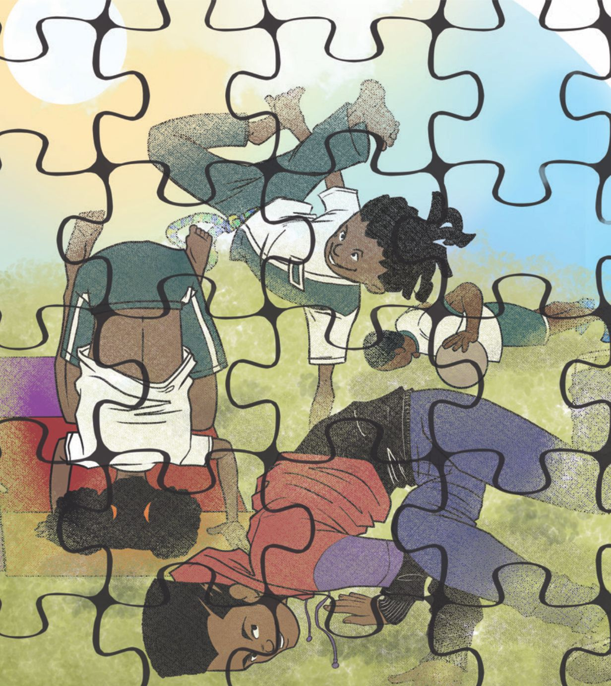
7º ano
Iniciando a busca
Ao trabalhar com essa unidade temática, espera-se que os alunos desenvolvam as seguintes habilidades e competências:
- (EF67EF01) Experimentar e fruir, na escola e fora dela, jogos eletrônicos diversos, valorizando e respeitando os sentidos e significados
- • (EF67EF02) Identificar as transformações nas características dos jogos eletrônicos em função dos avanços das tecnologias e nas respectivas exigências corporais colocadas por esses diferentes tipos de jogos.
- Competências específicas: 1, 2, 8, 10
- Competências gerais: 1, 5
- Competências de linguagem: 1, 6
Os jogos eletrônicos, com o avanço das novas tecnologias de informação e comunicação, passaram de uma simples brincadeira de crianças para uma das possibilidades de diversão mais utilizadas pelas pessoas. Crianças e adolescentes passam muito tempo jogando e são motivados a fazê-lo pelo próprio jogo.
Diante disso, a escola pode aproveitar essa motivação para explorar os jogos eletrônicos em sala de aula tendo em vista que auxiliam no desenvolvimento de algumas habilidades, por exemplo, o raciocínio lógico, o trabalho em equipe, a capacidade de planejamento e tomadas de decisão, a seleção visual. Além disso, estimulam a memória e a interação com os colegas. Considerando que o uso compulsivo dos jogos eletrônicos pode causar dependência, é importante, nas aulas, predeterminar um tempo para as atividades bem como estabelecer um tema para elas, assim, será possível aproveitar os benefícios que os jogos eletrônicos oferecem.
Corpo em Ação
Jogos eletrônicos
Ao introduzir o conteúdo, investigue previamente o que os alunos conhecem sobre jogos eletrônicos, como é o acesso a eles em seu cotidiano, com que frequência jogam e em quais aparelhos.
EDUCAÇÃO FÍSICA 18
Proponha uma discussão com eles sobre questões relevantes a respeito dos jogos eletrônicos. Sugestões de temas:
- A forte presença da mídia eletrônica (televisão, celulares, computadores, video games, internet, etc.) em nossa sociedade.
- A evolução dos jogos eletrônicos (arcade – fliperama, consoles devideo game,jogos de computador).
- Jogos eletrônicos: violência e vício versus espaço de aprendizagem
- Video game versus atividade física.
- Para subsidiar seu trabalho, você pode consultar trabalhos e reportagens sobre o tema. Seguem algumas sugestões.
- Atletas de games ganham R$ 3 mil por mês e jogam até 14 horas por dia, de Bruno Araújo, publicado no portal G1. Disponível em: https://g1.globo.com/tecnologia/games/noticia/2014/04/atletas- -de-games-ganham-r-3-mil-por-mes-e-jogam-ate-14-horas-por-dia. html. Acesso em: 25 maio 2022.
- Exergames: jogos eletrônicos e exercícios? Talita da Silva de Assis e Alfred Sholl-Franco, publicado na revista Ciências & Cognição. Disponível em: http://www.cienciasecognicao.org/portal/wp-content/uploads/2011/09/2011_noticias_07_exergame.pdf. Acesso em: 25 maio 2022.
- De nerds a ciberatletas: o crescimento exponencial do e-sports, de Tatiana Furtado, publicado no O Globo. Disponível em: https://oglobo.globo.com/esportes/de-nerds-ciberatletas-crescimento-exponencial-do-sports-21233721. Acesso em: 25 maio 2022.
- Jogos eletrônicos: uma possibilidade educativa nas aulas de Educação Física, de Leila Pereira Fraga Rodrigues. Disponível em: http://www.diaadiaeducacao.pr.gov.br/portals/cadernospde/pdebusca/producoes_pde/2014/2014_unespar-paranavai_edfis_pdp_leila_pereira_fraga_rodrigues.pdf. Acesso em: 25 maio 2022.
- Jogos eletrônicos interativos incentivam crianças a praticar atividade física (vídeo). Disponível em: https://www.youtube.com/watch?time_continue=17&v=U7alLBA_KBk. Acesso em: 25 maio 2022.
Após as discussões, peça que os alunos produzam um texto registrando as conclusões. As produções podem ser publicadas no blog ou jornal da escola, se houver, ou para ser divulgado por outros meios, como mural, por exemplo.
Sugestão de Leitura
Adaptação de jogos eletrônicos para aulas de Educação Física
Iara Tedeschi Novais.
Trabalho que ropõe a adaptação de alguns jogos eletrônicos, que podem ser aplicados corporalmente, como novas possibilidades de atividades a serem vivenciadas em aulas de Educação Física, e ainda investiga os níveis de ânimo e satisfação dos alunos com as aulas que utilizaram esses jogos eletrônicos adaptados. Disponível em: https://repositorio.unesp.br/bitstream/handle/11449/120212/novais_it_tcc_rcla.pdf?sequence=1&isAllowed=y. Acesso em: 5 maio 2022.
Era dos Impérios
O game explorado será o Age of Empires, que significa Era dos Impérios. Converse com os alunos sobre o jogo e explique como será a adaptação dele para a prática corporal. Por ser um jogo de estratégia, exige concentração e trabalho em equipe.
EDUCAÇÃO FÍSICA 19
Organizando a atividade
Materiais necessários: bexigas coloridas (rosas, laranjas, vermelhas, azuis, verdes e amarelas). Número de aulas estimado: 2 Objetivo: experimentar e fruir de jogos eletrônicos por meio da prática corporal, interagindo com o colega com respeito, trocando ideias e dicas.
Organize os alunos em dois grupos, cada um escolherá um colega para encher bexigas. Este deverá optar por uma cor de bexiga de acordo com a estratégia do grupo. Cada bexiga cheia equivale a um jogador, e cada cor de bexiga tem uma função diferente: as de cor rosa, laranja e vermelha adicionam defensores ao jogo, que ficam no seu próprio campo aguardando o ataque do outro time; as de cor azul, verde e amarela adicionam atacantes; e as de cor branca permitem adicionar um ajudante, com a função de auxiliar no enchimento de bexigas.
O atacante deve ir ao campo do adversário e disputar a sorte com o defensor (por meio de par ou ímpar; pedra, papel e tesoura ou outro), quem ganhar a disputa fica com a bexiga. Após determinado período de tempo (até o final da aula), vence o grupo que tiver o maior número de bexigas no seu campo (Império).
Sugestão de Leitura
O jogo de video game relacionado ao atletismo e suas possibilidades pedagógicas
Guilherme Correa Camuci, Sara Quenzer Matthiesen e Guy Ginciene
Artigo, da revista Motrivivência, que analisa o jogo de video game Kinect Sports, relacionado ao atletismo, verificando as proximidades e distanciamentos em relação à modalidade esportiva oficial e suas possibilidades pedagógicas. Disponível em: https://periodicos.ufsc.br/index.php/motrivivencia/article/view/2175-8042.2017v29n50p62/33996. Acesso em: 5 maio 2022.
Jogo de movimento – com câmera
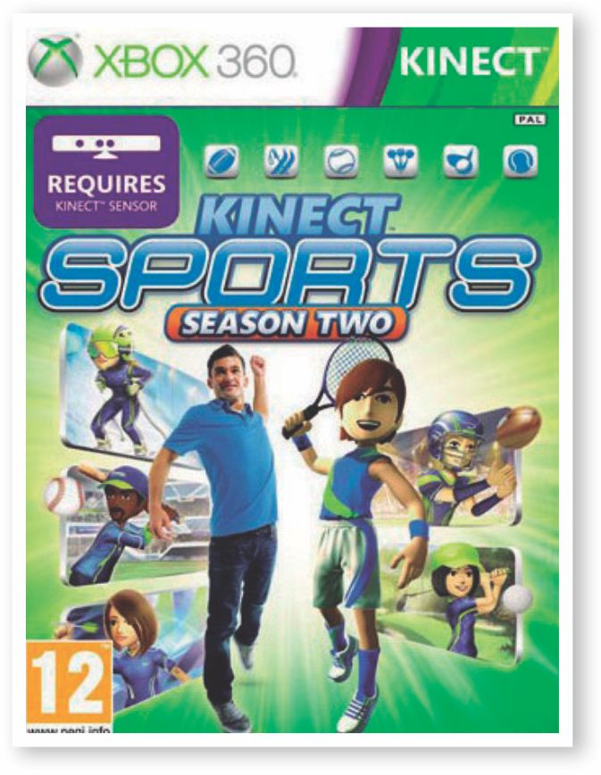
Jogo Kinect Sports 2. Xbox 360.É um game esportivo que utiliza uma câmera de detecção de movimento. O game introduz modalidades variadas que exigem mais precisão e concentração dos usuários. Apresenta uma coletânea de esportes que testa as habilidades do jogador no futebol, escalada, corrida de jet ski, tiro ao alvo, tênis e boliche.
Com o objetivo de inserir a prática de jogos eletrônicos no ambiente escolar, além de os alunos poderem fazer uma comparação de jogos com movimentos e sem movimentos corporais, a proposta é possibilitar à turma a vivência na quadra dos games. Selecione alguns jogos e organize para que todos os alunos joguem por tempos iguais.
Se achar conveniente, você pode convidar os familiares dos alunos e elaborar na escola um dia do game, em que alunos e familiares possam se divertir, oportunizando que também a comunidade desenvolva essa atividade.
Para tal, se fazem necessários aparelhos de video games, que poderão ser emprestados pelos alunos e comunidade ou serem adquiridos pela escola. Os jogos podem ser os de esportes, como o Kinect Sports. Solicite que os alunos realizem as duas versões de um mesmo esporte: a virtual e a real.
EDUCAÇÃO FÍSICA 20
Organizando a atividade
Materiais necessários: video game, TV, jogo de video game com esportes e materiais conforme o esporte escolhido.
Número de aulas estimado: 2
Objetivo: experimentar e fruir de jogos eletrônicos no video game e na quadra por meio da prática corporal, interagindo com os colegas com respeito, trocando ideias e dicas.
Escolha, juntamente com os alunos, um esporte para ser vivenciado por meio de jogo eletrônico e de prática. Por exemplo, se for escolhido o esporte atletismo, primeiramente os alunos irão vivenciar as modalidades de correr, saltar, arremessar e lançar por meio do video game (virtual) e, após, irão realizar as mesmas modalidades no ambiente real.
Antonio Scarpinetti / CRUESP 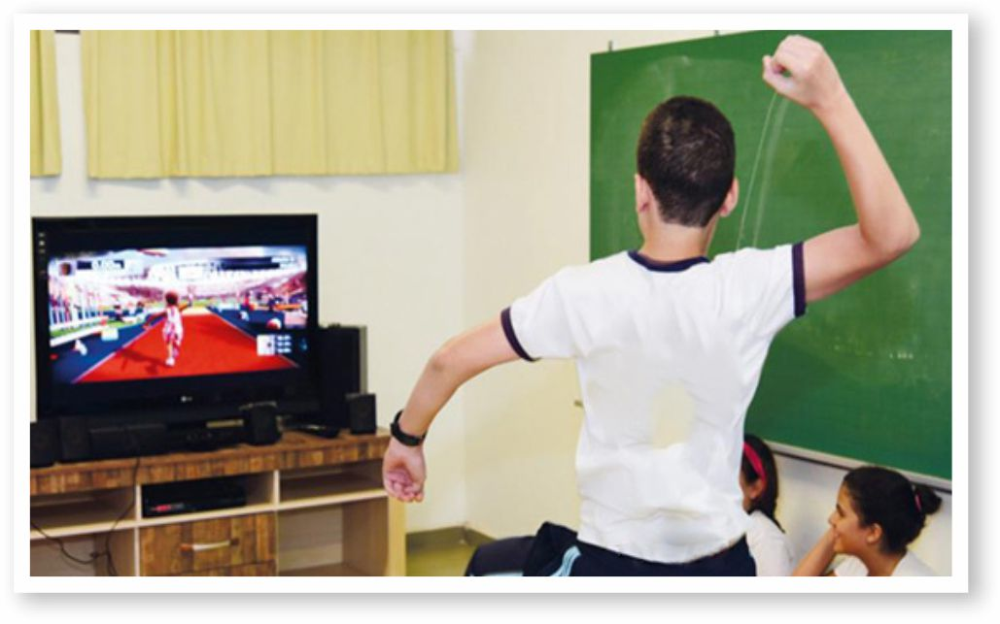
Estudante do Ensino Fundamental durante atividade com video game em aula de Educação Física. Campinas, SP, 2016Taiga Cazarine/G1 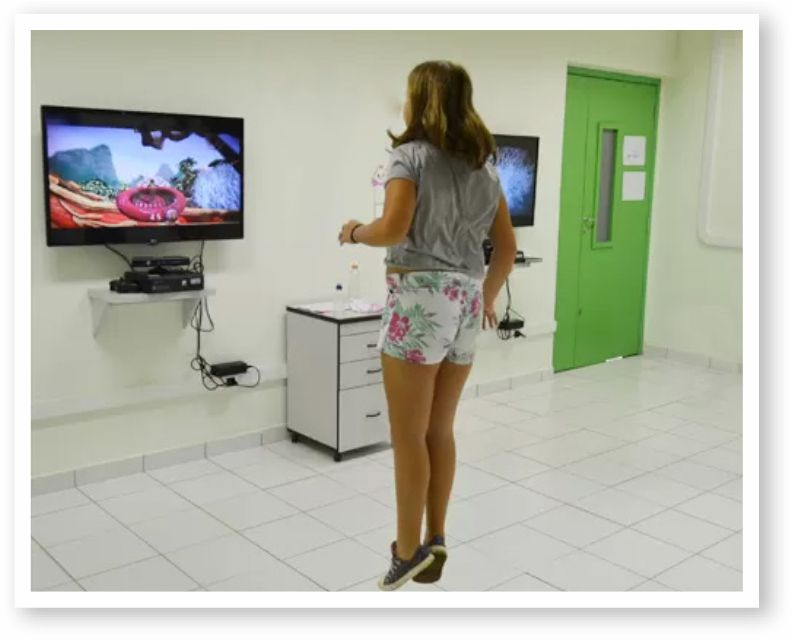
Os video games permitem ao jogador explorar vários aspectos da dimensão corporal. Ribeirão Preto, SP, 2018Depois da experiência realizada, converse com os alunos sobre os resultados, questionando-os: de quais jogos gostaram mais, qual cansou mais, qual foi o mais motivante, que sentimentos surgiram.
Outra questão importante para ser debatida com os alunos é sobre a falta de atividade física realizada periodicamente por crianças, pré-adolescentes, adolescentes e jovens. A escolha de preencher as horas livres apenas com jogos eletrônicos pode levar ao sedentarismo e, consequentemente, a diversos problemas de saúde.
Criando um jogo eletrônico
Existem várias maneiras de ser ter lucro com games, uma delas é criando jogos eletrônicos. Para tanto, existe todo um processo de programação em linguagem eletrônica. Desenvolver um jogo eletrônico exige uma série de habilidades diferentes: de programação, arte, animação, música, design
EDUCAÇÃO FÍSICA 21
de som, teste e controle de qualidade, produção, financiamento, entre outros. Antes deste processo todo, alguém ou um grupo de pessoas teve uma ideia de como seria o jogo.
Organizando a atividade
Materiais necessários: folhas de sulfite, lápis ou caneta, equipamento
para projeção e computador.
Número de aulas estimado: 3
Objetivo: produzir conhecimento, resolvendo problemas e desenvolvendo projetos autorais e coletivos.
Proponha aos alunos um trabalho em grupos, no qual deverão propor uma nova ideia de jogo eletrônico, que poderá ser próprio para computador, video game ou celular. Eles tanto entregarão os resultados por escrito como apresentarão oralmente aos colegas, expondo:
- nome do jogo;
- equipamento eletrônico;
como se dará o jogo;
regras;
ambiente ou campo de jogo;
outros itens que acharem necessários.
Tudo sobre E-Sports:
o que é e porque está cada vez mais popular
E-Sports é o nome dado às competições de jogos virtuais, uma modalidade que vem ganhando popularidade nos últimos anos.
O que são E-Sports?E-Sport é o termo utilizado para classificar competições de jogos virtuais, especialmente aquelas realizadas por profissionais, que podem ser assistidas pelo público pela televisão ou por plataformas de streaming.
Muitos tipos de jogos são contemplados pelos E-Sports e a maioria dos atletas começa sua carreira de modo despretensioso, jogando um game em casa.
Muitos desses atletas descobrem como gravar a tela do computador para compartilhar os melhores momentos de sua experiência dentro do jogo e, a partir daí, chamam a atenção do público.
EDUCAÇÃO FÍSICA 22
Há também pessoas que criam contas em sites de streaming para transmitir ao vivo o desenvolvimento de um game.
Quais são os tipos de E-Sports?Assim como qualquer outra prática esportiva, os E-Sports contam com várias categorias e modalidades.
Por ser um tipo de jogo criado no exterior, as categorias costumam ser apresentadas em siglas, que vêm de termos em inglês.
Existem pelo menos 6 tipos de E-Sports bastante populares. São eles: MOBA (Multiplayer Online Battle), FPS (First Person Shooter), Card Games, Battle Royale, Simuladores, Evo Fighting Games.
DCStudio/Freepik 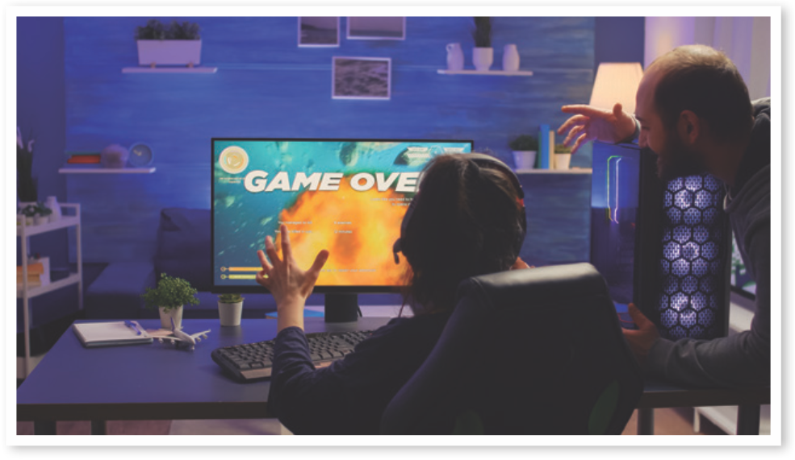
Perdendo no jogo.É muito comum que os competidores optem por jogos que despertem seu interesse de modo genuíno. Foi por gostar de jogar, sem grandes expectativas, que alguns dos melhores jogadores de E-Sports do país iniciaram.
TUDO sobre E-Sports: o que é e porque está cada vez mais popular. Gazeta Esportiva, 29 set. 2021. Disponível em: https://www.gazetaesportiva.com/institucional/tudo-sobre-esports-o-que-e-e-porque-esta-cada-vez-mais-popular/. Acesso em: 20 maio 2022.Avaliando
Por meio da observação direta, avalie se os alunos se envolveram na participação dos jogos eletrônicos, interagindo com os colegas com respeito.
Avalie se eles conseguiram realizar, na prática corporal, os jogos eletrônicos, passando da realidade virtual para a vivência corporal.
Avalie, também, o trabalho em grupo realizado na criação do jogo eletrônico, observando a participação de cada aluno na criação, se deu ideias, se envolveu-se, exercendo protagonismo na produção do projeto coletivo, e se o grupo deu conta de passar a ideia por meio da escrita e da oralidade.
EDUCAÇÃO FÍSICA 23
Iniciando a busca
Ao trabalhar com essa unidade temática, espera-se que os alunos desenvolvam as seguintes habilidades e competências:
- (EF67EF03) Experimentar e fruir esportes de marca, precisão, invasão e técnico-combinatórios, valorizando o trabalho coletivo e o protagonismo
- (EF67EF04) Praticar um ou mais esportes de marca, precisão, invasão e técnico-combinatórios oferecidos pela escola, usando habilidades técnico-táticas básicas e respeitando regras.
- (EF67EF05) Planejar e utilizar estratégias para solucionar os desafios técnicos e táticos, tanto nos esportes de marca, precisão, invasão e técnico-combinatórios como nas modalidades esportivas escolhidas para praticar de forma específica.
- (EF67EF06) Analisar as transformações na organização e na prática dos esportes em suas diferentes manifestações (profissional e comunitário/lazer).
- (EF67EF07) Propor e produzir alternativas para experimentação dos esportes não disponíveis e/ou acessíveis na comunidade e das demais práticas corporais tematizadas na escola.
- Competências específicas: 1, 2, 6, 8, 9, 10
- Competências gerais: 1, 2, 6, 9, 10
- Competências de linguagens: 1, 2, 3, 4
O esporte é o jogo institucionalizado, regulado por regras universais, comandado pelas federações e confederações esportivas. São inúmeros os benefícios que as práticas esportivas trazem para as pessoas, independentemente da idade. Entre tantas, podemos citar a manutenção e melhoria da saúde, a socialização, a cooperação, a melhora da autoestima, a tolerância, a inclusão e o respeito.
O esporte é um dos grandes fenômenos socioculturais da atualidade, estimulando crianças, jovens, adultos e até mesmo idosos à sua prática. Apresenta várias possibilidades de manifestação, como esporte de alto rendimento (profissional), de lazer, para portadores de deficiência ou escolar. Sem descartar as várias vertentes rentáveis que o esporte propicia para além dos praticantes, ou seja, para organizadores de eventos, comércio de produtos associados ao esporte, emissoras televisivas, entre outros.
Na escola, o esporte pode apresentar duas variáveis: uma se caracteriza como conteúdo de Educação Física e a outra, como esporte
EDUCAÇÃO FÍSICA 24
escolar (com escolinhas esportivas, ou seja, treinamento com equipes que representam a escola em competições oficiais).
O esporte, nas aulas de Educação Física, precisa ser analisado como produção cultural, ao qual o aluno terá acesso por meio de várias práticas. Durante a vivência corporal e reflexões, muitas competências serão desenvolvidas, como socialização, construção de valores morais e éticos, desenvolvimento socioafetivo. As crianças e os adolescentes aprendem, por meio do esporte, valores fundamentais que levam para a vida, como união, respeito, amizade, cooperação, entre outros. Aprendem também a enfrentar e superar derrotas, crescer com as vitórias e, ainda, desenvolvem a independência, a responsabilidade e a autoconfiança.
Corpo em ação
Esportes de marca
Como este conteúdo já foi abordado no 6.º ano, questione se os alunos lembram quais são os esportes de marca, aqueles em que o desempenho dos atletas é fundamentado na comparação dos registros de marcas alcançadas por tempo, peso e/ou metros. Exemplos de esportes de marca: remo, levantamento de peso, ciclismo, patinação de velocidade, atletismo (corridas, saltos, arremessos, lançamentos), natação, etc.
Atletismo – corridas de revezamento
A corrida de revezamento tem como principal característica o revezamento no transporte de um bastão entre os corredores durante a corrida.
Segundo a Confederação Brasileira de Atletismo, a corrida surgiu baseada na realização de um evento beneficente realizado por bombeiros em Nova Iorque, sendo o primeiro registro em 17 de novembro de 1883, em Berkeley, cidade do estado da Califórnia, nos Estados Unidos. Nesse evento, bandeiras vermelhas teriam sido revezadas entre os corredores a cada 300 jardas (aproximadamente 275 metros). Assim, alguns anos depois desse evento, a prova viria a compor os Jogos Olímpicos da Era Moderna.
Tipos de corridas de revezamento olímpicas- Corrida de revezamento 4 × 100: nessa prova, cada atleta deve percorrer 100 m conduzindo o bastão. Assim, durante o percurso total da prova, a equipe realizará 400 m, dando uma volta completa na pista de atletismo.
- Corrida de revezamento 4 × 400: nesse revezamento, os atletas percorrem 400 m cada, ou seja, todos completam uma volta na pista de atletismo.
EDUCAÇÃO FÍSICA 25
Organizando a atividade
Materiais necessários: bastões ou bandeiras coloridas.
Número de aulas estimado: 2
Objetivo: vivenciar o esporte de marca atletismo, realizando a corrida
de revezamento com empenho, procurando dar o melhor de si em
prol do resultado coletivo.
Organize a turma em grupos de quatro alunos. Primeiramente, motive-os a realizar a corrida de revezamento 4 x 100 m e, a corrida de revezamento 4 x 400 m.
Utilize um bastão, que pode ser um pedaço de cabo de vassoura de aproximadamente 30 cm, ou uma bandeira colorida para cada equipe.
Se não houver uma pista de atletismo na escola, delimite um espaço circular. Para a corrida de revezamento 4 x 100 m divida-o em quatro, marcando, com um risco no chão, cada área.
Sérgio Bonfim dos Santos 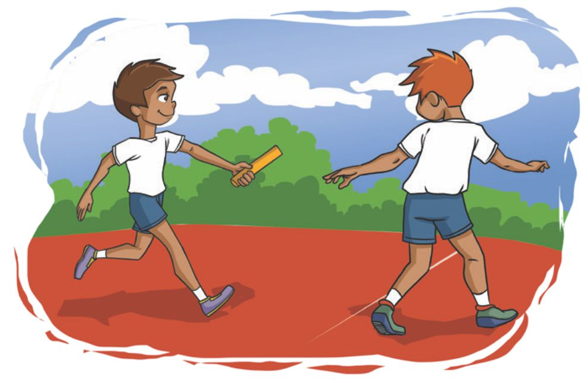
Solicite que os alunos definam a ordem que vão estabelecer para saber quem vai ser o primeiro, o segundo, o terceiro ou o quarto a correr. Cada um deve se posicionar em uma das áreas marcadas, sendo que o primeiro estará de posse do bastão. Ao sinal sonoro, os primeiros correm em alta velocidade e passam o bastão para o segundo corredor, este corre e passa para o terceiro, que fará o mesmo, passando o bastão para o quarto colega terminar a corrida. Será vencedora a equipe que fizer o percurso no menor tempo.
Para realizar a corrida de revezamento 4 x 400 m será usada a pista sem a divisão de áreas, e cada aluno irá percorrer toda a área circular. Semelhante à corrida anterior, os alunos irão revezar o bastão depois de darem uma volta completa, correndo o quanto conseguirem. Vence a equipe que o fizer no menor tempo
EDUCAÇÃO FÍSICA 26
Atletismo – salto em distância
O salto em distância é uma prova na qual os atletas devem correr em uma raia e saltar, caindo com os dois pés em uma caixa de areia. Vence aquele que saltar a maior distância. Cada um tem direito a três saltos. A impulsão para o salto deve se dar antes da linha branca demarcada no chão. A medição se dará da linha branca até a primeira marca do corpo na areia.
Leandro Neumann/Flickr 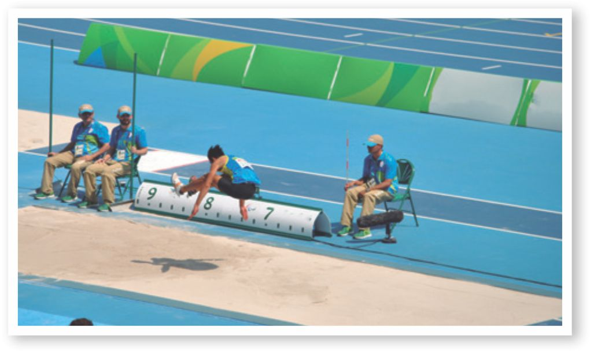
Salto em distância masculino, Jogos Paralímpicos, Estádio Olímpico (Engenhão). Rio de Janeiro, RJ, 2016tereza_vasnovska/Pixabay 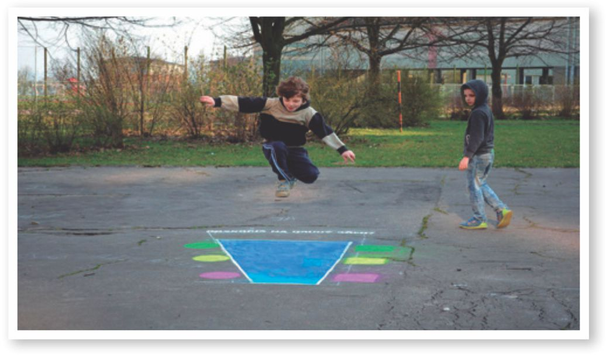
Salto em distância praticado em escola. República Tcheca, 2017.Organizando a atividade
Materiais necessários: caixa de areia ou uma área com colchonetes/colchão, giz ou corda.
Número de aulas estimado: 2
Objetivo: vivenciar o salto em distância, procurando realizá-lo da melhor maneira possível para obter uma boa marca, superando-a a cada salto.
Mostre para os alunos um desenho com as fases do salto em distância e explique cada uma delas.
Sérgio Bonfim dos Santos 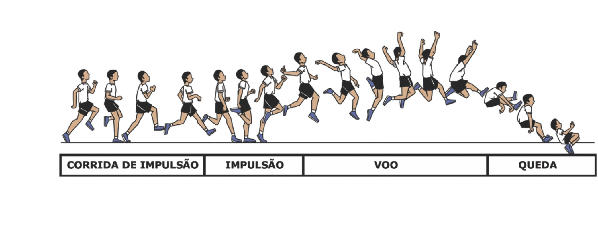
Utilize a caixa de areia da sua escola ou prepare um espaço com colchonetes ou um colchão grande. Delimite um espaço para a corrida de aproximação e marque no chão, com giz ou uma corda, o limite para iniciarem o salto.
EDUCAÇÃO FÍSICA 27
Organize os alunos em uma coluna e oriente-os a realizarem a corrida, baterem um dos pés antes da marca, saltarem para cima e para frente e caírem com os dois pés na areia ou no colchão. Depois, irão repetir o salto usando o outro pé como impulsão. Deverão escolher qual é o melhor pé de impulsão para realizarem os próximos saltos. Oriente-os também a projetarem o corpo para frente quando caírem na areia ou colchão, já que a marcação é feita a partir da primeira marca, ou seja, se caírem sentados, será do bumbum ou do cotovelo.
Depois, marque a distância dos saltos de cada aluno, visando à superação da marca a cada salto, contando com a sua mediação quanto ao aperfeiçoamento da técnica. O objetivo não é enaltecer o aluno que saltou mais longe, e sim avaliar o progresso de cada um conforme a compreensão da técnica e do esforço empenhado.
Atletismo – salto em altura
Na escola, podemos trabalhar de várias maneiras com o salto em altura, por exemplo, usando uma corda grande, que em geral é um material facilmente encontrado. Você será o moderador da atividade, controlando o ambiente e dosando os limites de altura e as dificuldades a serem impostas, para que o aluno encare o desafio até o seu limite e com prazer de realizar a atividade, ainda que não seja o vencedor da competição.
Como maneira de evitar que os alunos menos habilidosos ou com alguma deficiência se frustrem e tenham uma participação muito curta na atividade, pode-se criar uma espécie de repescagem. Nesse momento, os alunos que vão sendo eliminados passarão a ter mais chances de tentar saltar novamente e, dessa vez, obter sucesso, uma vez que o desafio se aproxima do seu nível e de sua realidade. Para isso, basta ir agrupando os eliminados e ir intercalando os grupos que vão sendo formados. Porém, você deverá ter um cuidado especial para regular a altura da corda nas diferentes alturas aproximadas que cada grupo estará saltando.
Organizando a atividade
Materiais necessários: corda grande, colchão grande ou colchonetes.
Número de aulas estimado: 1 a 2
Objetivo: vivenciar o salto em altura, buscando realizá-lo da melhor
maneira possível para obter boa marca, superando-a a cada salto.
Para preparar a atividade, primeiramente amarre uma das extremidades da corda em qualquer estrutura que permita sua regulagem no sentido vertical, pode ser trave de futebol, poste de voleibol, mastro de bandeira, estrutura do prédio, etc. Você pode segurar a outra extremidade da corda com a mão, prevenindo, assim, que algum aluno que tenha engatado o pé na corda possa se machucar, uma vez que a corda é controlada pelas suas mãos.
EDUCAÇÃO FÍSICA 28
Sérgio Bonfim dos Santos
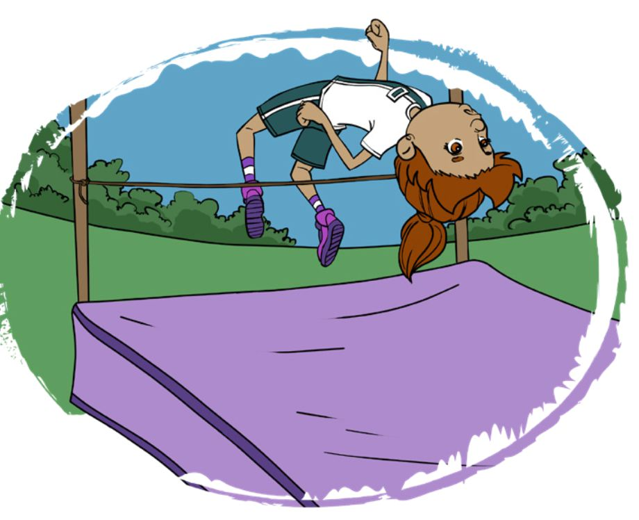
Para o desenvolvimento da atividade, peça que os alunos formem uma grande fila para se aquecerem. Eles começarão transpondo a corda com corrida moderada e leve salto, pois a corda ainda estará a uma altura confortável, de aproximadamente 20 cm do solo. Dessa forma, permite-se que o mesmo aluno passe várias vezes por ela sem errar, ou seja, sem tocar a corda, elevando a temperatura corporal e preparando seu corpo para saltos que passarão a ser mais altos e intensos a cada passagem.
Sempre que saltar sobre a corda e obtiver sucesso, o aluno volta ao final da fila, aguardando sua vez para tentar transpor uma nova altura. Caso contrário, os alunos formam uma nova fila, paralela à já existente, para novamente tentarem pular a uma altura mais moderada, próxima daquela na qual não obtiveram sucesso. Conforme forem passando pelos níveis, os alunos estarão mais perto dos seus limites. Vence o último a não conseguir mais transpor a altura estipulada da corda.
Observação importante: procure incentivar os alunos que já tenham sido eliminados a torcer pelos que ainda estão tentando. Desse modo, além de continuarem participando ativamente, tornam-se mola propulsora para os colegas participantes buscarem seus limites e pularem cada vez mais alto, tentando responder positivamente à confiança depositada neles.
Dando continuidade à atividade, agora, embaixo da corda, estará posicionado um colchão.
Atletismo – arremesso de peso
O arremesso de peso é uma modalidade esportiva em que o atleta impulsiona uma esfera de aço para a máxima distância possível. Diz-se “arremesso” e não “lançamento”, como é o caso de dardo e disco, porque, ao contrário destes, o peso é empurrado, e não lançado.
Nas competições, cada atleta possui número determinado de arremessos para estabelecer sua melhor marca. Para realizá-los, ele deve seguir precisamente cada uma das fases do movimento de arremesso, conforme a técnica utilizada.
Pedro Ramos/rededoesporte.gov.br 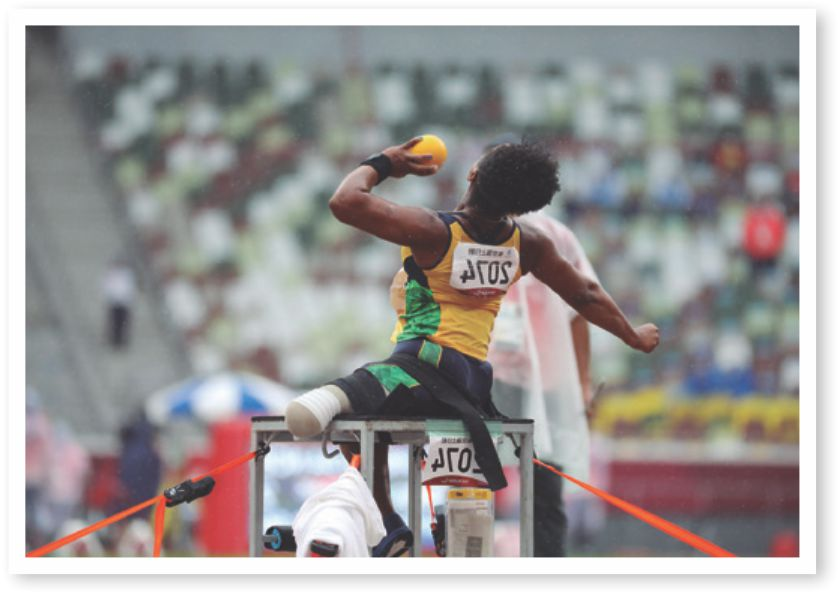
Arremesso de peso, Jogos Paralímpicos de Tóquio. Tóquio, Japão, 2021.EDUCAÇÃO FÍSICA 29
Confira, na ilustração a seguir, as fases do arremesso e posições do corpo do atleta em cada uma delas.
Sérgio Bonfim dos Santos 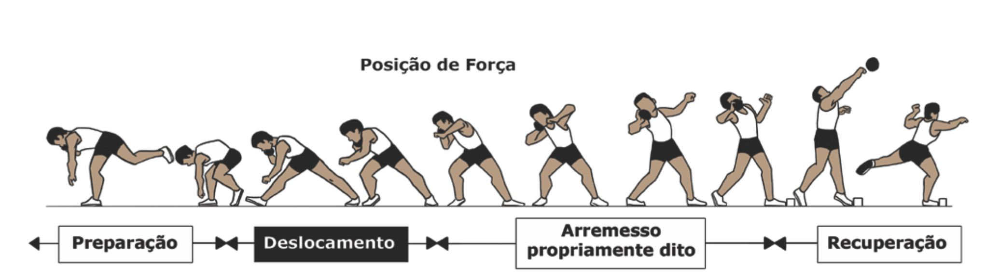
Nas aulas, no entanto, os alunos poderão realizar uma movimentação mais simplificada.
Organizando a atividade
Materiais necessários: peso de atletismo ou material adaptado.
Número de aulas estimado: 2
Objetivo: vivenciar o arremesso de peso empregando habilidades
técnico-táticas básicas para sua realização, cuidando da integridade
física própria e também dos colegas.
Para a realização do arremesso de peso, utilize o peso de atletismo ou um objeto pesado que não quebre, como uma medicine ball ou outro material alternativo. Leve os alunos para um local adequado, que pode ser areia, terra, gramado. Mostre a técnica para a realização do arremesso.
Para auxiliar sua prática, você pode conferir uma vídeo aula que apresenta tanto a confecção de um peso alternativo como a técnica de lançamento que pode ser utilizada com os alunos. Acesse-a pelo link https://cutt.ly/WJqXCEu. Acesso em: 24 maio 2022.
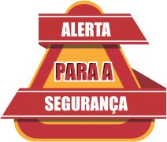Permita que os alunos realizem o arremesso várias vezes, intervindo sempre que necessário para melhorarem a técnica. Converse também sobre os cuidados que devem ter para não se machucarem e nem provocar acidentes com colegas, mantendo a integridade física de todos.
Atletismo – lançamento de dardo e disco
No atletismo olímpico, as provas de lançamento consistem em o atleta lançar objetos (dardo, disco ou martelo) na maior distância possível, superando a marca dos adversários.
EDUCAÇÃO FÍSICA 30
Pedro Ramos/ rededoesporte.gov.br 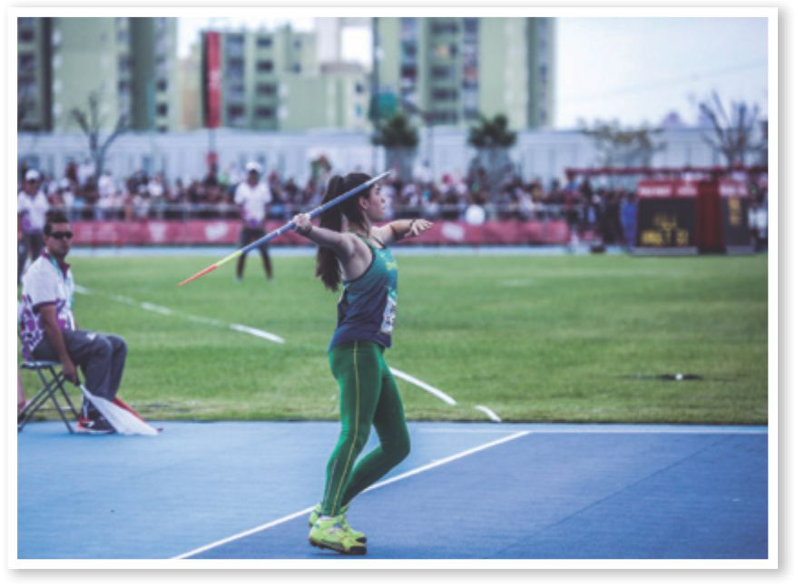
Lançamento de dardo nos Jogos Olímpicos da Juventude. Buenos Aires, Argentina, 2018.Rodolfo Vilela/Ministério da Cidadania 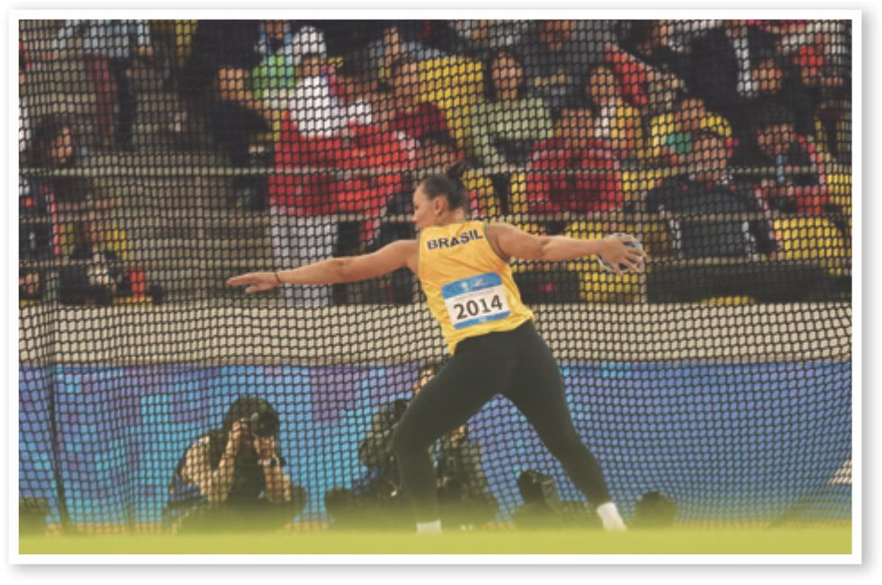
Lançamento do disco nos 7.º Jogos Mundiais Militares. Wuhan, China, 2019.O lançamento de dardos tem sua origem na antiguidade, quando objetos como lanças eram utilizados na caça e em combates entre os povos. Enquanto prática esportiva, já fazia parte dos Jogos Olímpicos da Grécia Antiga.
Nas provas atuais, o lançamento é feito após uma corrida de aproximação do atleta, que a realiza carregando o dardo na altura da testa, acelerando progressivamente até atingir a velocidade necessária. Quando ele alcança a marca intermediária, inicia a corrida preparatória (momento de preparação do lançamento), posicionando o dardo para trás da linha dos ombros. Ao chegar à marca, inclina o tronco para trás e executa o arremesso.
Confira o passo a passo, a seguir.
Sérgio Bonfim dos Santos 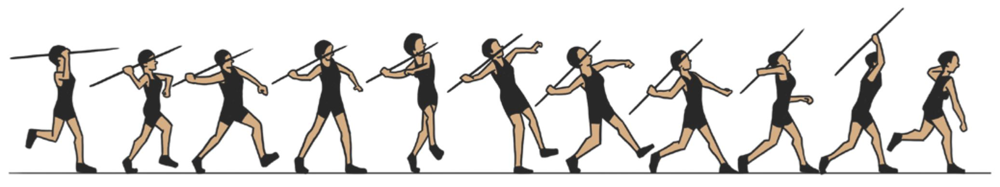O dardo deverá atingir o chão pela ponta dianteira. Se o atleta ultrapassar a marca da zona de lançamento, mesmo após o arremesso, é desclassificado.
Já no lançamento de disco, o atleta inicia se posicionando dentro de um círculo de 2,5 m de diâmetro, e não poderá pisar na linha de demarcação. Ele irá realizar um giro de uma volta e meia para executar o arremesso, usando o corpo todo e não apenas o braço, garantindo assim maior impulso. Veja cada fase da realização do giro na ilustração a seguir.
EDUCAÇÃO FÍSICA 31
Sérgio Bonfim dos Santos
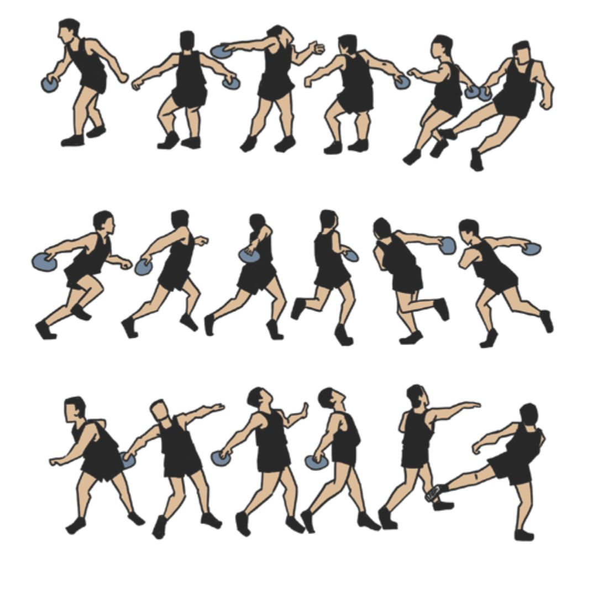
Antes de propor a prática aos alunos, exiba imagens e vídeos a eles, e também forneça textos com as regras de cada modalidade.
Organizando a atividade
Materiais necessários: disco e dardo de atletismo ou material adaptado.
Número de aulas estimado: 3
Objetivo: vivenciar os lançamentos de disco e dardo, empregando
habilidades técnico-táticas básicas para a realização destes, cuidando
com a própria integridade física e também a dos colegas..
Inicie com exercícios preparatórios de lançamento, que podem ser individual, em duplas ou trios, para que os alunos se adaptem às técnicas e ao material. Junto com eles, realize as medições e marcações do espaço: setor de corrida para o lançamento de dardo e o círculo para lançamento de disco.
Se não tiver os materiais você pode confeccionar junto com os alunos utilizando materiais alternativos. Consulte sites na internet. Sugestão: http://portaldoprofessor.mec.gov.br/fichaTecnicaAula.html?aula=19222. Acesso em: 24 maio 2022.
Na realização da atividade, deixe os alunos falarem sobre as possíveis dificuldades e auxilie-os no aprimoramento da técnica. Finalize com uma competição, na qual os alunos irão superar a própria marca, e não a dos colegas. Vocês podem, juntos, pensar e discutir maneiras para adaptação da prova aos colegas com alguma deficiência.
Ao término, promova uma roda de conversa para que todos relatem como foi sua participação na atividade, levantando os pontos positivos e o que precisa melhorar.
EDUCAÇÃO FÍSICA 32
Avaliando
Por meio da observação direta, avalie a melhoria da técnica de arremesso e de lançamentos de cada aluno, por meio das suas intervenções e do esforço deles; a participação com respeito aos colegas; e os cuidados com os materiais, sem a realização de brincadeiras em que podem se machucar.
Para avaliar a compreensão dos conteúdos trabalhados, solicite um trabalho em grupo em que os alunos deverão explicar as provas vivenciadas em aula, suas técnicas, suas regras, usando como material de apoio slides, vídeos da internet ou mesmo cartazes.
Corpo em Ação
Esportes de precisão
Para situar os alunos, relembre com eles quais são os esportes de precisão, sendo todos aqueles que exigem a eficiência e a eficácia para atingir determinado objetivo ou alvo. Exemplos: golfe, arco e flecha, tiro esportivo, bocha, boliche, curling, etc.
Bocha
O jogo de bocha é considerado um dos mais antigos do mundo, havendo indícios de que tenha sido praticado no Egito e na Grécia da Antiguidade. Porém, alguns defendem suas raízes italianas, tendo a primeira organização formada em Turim, em 1888, com o primeiro campeonato realizado na cidade de Gênova, em 1951, por isso se constitui um esporte com fortes traços culturais da comunidade italiana (DaCOSTA, 2005, p. 390).
Na versão atual do jogo, os participantes devem arremessar bochas (bolas), que podem ser feitas de madeira, de metal ou de resina sintética, em direção a uma pequena bola chamada bolim, balim ou jack, sobre uma cancha, objetivando aproximar-se o máximo possível do bolim (pequena bocha). Será considerado vitorioso o jogador ou a equipe que somar o maior número de pontos, que são atribuídos de acordo com a perfeição das jogadas.
A bocha é praticada em uma cancha (ou quadra), que pode ser de terra, de material sintético ou de saibro, cercada por bordas de madeira, cujas dimensões oficiais são: 24 x 4 m. As bochas devem ser maciças, com peso aproximado de 1100 g e ter em média 11,2 cm de diâmetro.
EDUCAÇÃO FÍSICA 33
Organizando a atividade
Materiais necessários: espaço plano e nivelado e a bola de bocha.
Número de aulas estimado: 2
Objetivo: experimentar e fruir o esporte de precisão bocha, valorizando o trabalho coletivo e o protagonismo, empregando as técnicas básicas e o respeito às regras.
Se você tiver condições de apresentar aos alunos uma cancha oficial e puder realizar a atividade nesse espaço, aproveite a oportunidade. É possível encontrar parques e centros comunitários, próximos à escola ou localizados no mesmo bairro, que investem em diversas atividades de lazer e esportes regionais, como a bocha.
Pode ser disputado entre equipes ou individualmente. O jogo começa com o arremesso do bolim, após já ter sido decidido por sorteio prévio o jogador ou a equipe que o lançará, a uma distância mínima de um metro após a metade da cancha (ou quadra). O lugar em que o bolim parar passará a ser o ponto chave da partida; ponto esse do qual as bochas devem ser aproximadas.
Cada jogador tem direito a quatro bochas, sendo que as duas primeiras bochas serão lançadas de maneira alternada, visando colocá-las o mais próximo possível do bolim e o próximo a jogar será aquele que ficou em desvantagem com a bocha mais longe do bolim. É permitido o choque entre as bochas, mas para que a jogada seja válida a bocha jogada que se chocar contra qualquer outra ou contra o bolim, desviando qualquer um dos dois, em uma extensão superior a 70 cm, será anulada e a bocha deslocada será recolocada no seu lugar de origem. A bocha também pode ser arremessada pelo ar visando apenas aproximação e mediante aviso prévio e posterior autorização da arbitragem, com o objetivo de acertar as suas próprias ou as bochas adversárias deslocando-as, procurando deixar uma melhor posicionada e com potencial real de pontuar
Após o fim das jogadas de cada time, ganha mais pontos aquele que estiver com a bola mais próxima do bolim, enquanto o outro time não marcará pontos. Marca-se um ponto adicional para cada bola do time vencedor que estiver com a bola mais próxima do bolim que do outro time. Conforme as regras, as bolas que estiverem juntas ao bolim, no fim das jogadas, contam como dois pontos, em vez de um. Se as bolas dos dois times estiverem numa distância igual do bolim, ninguém marca pontos e, então, outra rodada é jogada.
EDUCAÇÃO FÍSICA 34
Jogo de bocha adaptado
Proporcionar a vivência para alunos especiais – sejam eles cadeirantes, com dificuldades motoras, de mobilidade ou paralisia de membros superiores, ou mesmo algum grau de paralisia cerebral – é muito importante, além de extremamente gratificante. Porém, para que essa facilitação aconteça são necessárias pequenas adaptações, como ter um tutor para auxiliá-los. Também se pode providenciar uma calha, feita de tubo de PVC, com o comprimento suficiente para que seja apoiada a partir da altura do rosto/ombro do aluno e toque o chão, levemente afastada do corpo ou da cadeira, de maneira inclinada.
O tutor vai auxiliar o aluno ao direcionar o cano para onde este desejar e posicionará a bola para posteriormente soltá-la. Guiada pela calha, a bola descerá rolando na direção que o aluno pediu e orientou, da mesma forma com altura do posicionamento da bola apoiada no tubo, a fim de que ela seja lançada mais longe ou mais perto. O restante das regras são as mesmas, as quais podem ser mantidas para não se desconfigurar o jogo. Como se vê, é fundamental que os alunos possam experimentar outras possibilidades.
O jogo de bocha adaptado é bastante parecido com o original, seguindo o mesmo padrão de regras, porém a quadra deverá ser lisa e plana como o piso de um ginásio em madeira, cimento ou sintético. Mesmo com a falta de condições consideradas ideais, na escola temos um ambiente propício para adaptações e experimentações. Podemos usar, por exemplo, as próprias salas de aula, afastando as carteiras e liberando espaço para que as bochas possam ser lançadas.
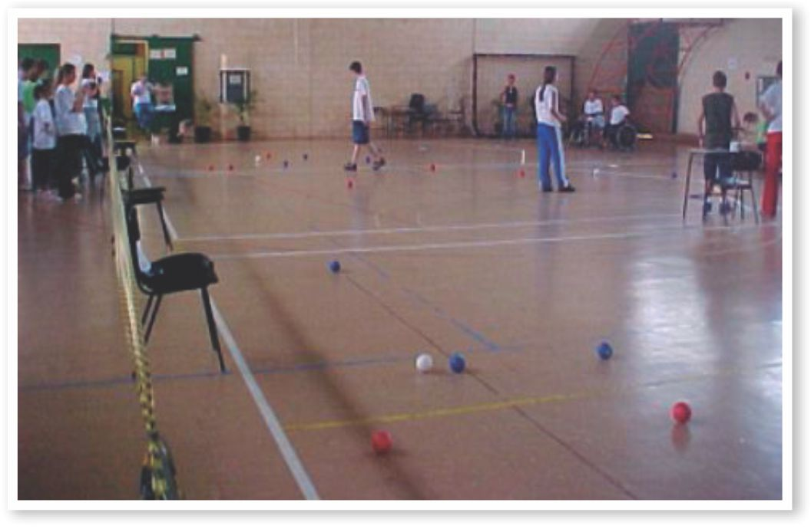
Jogo de bocha adaptado para o espaço
escolar. Maringá, PR, 2006.
Com simples modificações nas regras, podemos privilegiar que equipes heterogêneas obtenham sucesso e se tornem vencedoras, por meio do modelo de somatória de pontos, e que os participantes compreendam que o resultado de ganhar e perder possa até mesmo ficar em segundo plano, pois outras descobertas importantes são feitas como no processo de escolha, que pode ser diferenciado (como sugerido no início desta unidade), as questões de socialização, de trabalho em grupo, de estratégias, etc.
Também é possível modificar o jogo procurando um equilíbrio técnico, de modo que todos realizem os lançamentos com a mão não dominante, com bolas irregulares feitas de papel, meias, vendas nos olhos ou outros materiais que sua imaginação permitir, a fim de que o jogo saia do padrão, sem perder a sua identidade.
EDUCAÇÃO FÍSICA 35
Organizando a atividade
Materiais necessários: oito a doze bolas de borracha n.° 6, ou bolas de handebol, uma bola de borracha para frescobol, tubo de PVC de 15 ou 20 mm e cadeiras.
Número de aulas estimado: 2
Objetivo: experimentar e fruir o esporte de precisão bocha adaptado, valorizando o trabalho coletivo e a inclusão.
Agora é só seguir as mesmas regras especificadas anteriormente para a bocha.
Avaliando
Para avaliar a compreensão do jogo de bocha, proponha aos alunos que organizem uma pequena disputa entre os professores da escola. Os jogos podem ser durante o intervalo (recreio) ou em algum dia preestabelecido. Avalie se os alunos souberam explicar como se dá e as regras do esporte e se souberam anotar a pontuação.
EDUCAÇÃO FÍSICA 36
Corpo em Ação
Esportes de invasão
Sendo os esportes de invasão ou territorial aqueles que têm como prioridade e objetivo a tomada de território ou de setor da quadra ou campo, defendido por um ou mais adversários, pergunte aos alunos quais são esses esportes (futebol, futsal, handebol, basquetebol, futebol americano, ultimate frisbee).
Ultimate frisbee
Também conhecido como ultimate, trata-se de um esporte coletivo praticado com um disco, tendo como objetivo a marcação de pontos ao passar o disco, na área adversária, para um companheiro de equipe. Possui algumas semelhanças com o rugby e o futebol americano.
Cada equipe é formada por 7 jogadores, sem que haja conflito físico entre os adversários. A área deve ser retangular, como uma quadra, campo de areia ou de grama, quase como se fosse um campo de futebol. As medidas oficiais, estabelecidas pela Federação Internacional de Frisbee, são mostradas na ilustração a seguir.

O ponto é marcado também em cada uma das extremidades (as endzones), no momento em que é feito o passe a um jogador e este consegue invadir a endzone (zona final) da outra equipe
O jogador que estiver com o frisbee em mãos não pode mais correr, deve passá-lo – em qualquer direção – a alguém do mesmo time. Quando um passe não for finalizado, será considerado um turnover (erro) e a posse do disco passa para o outro time.
EDUCAÇÃO FÍSICA 37
Para saber mais sobre o ultimate frisbee, acesse os sites da Federação Paulista de Disco e da Federação Internacional de Frisbee, disponíveis em: https://tinyurl.com/y7p2392b e https://tinyurl.com/ycp77hj4. Acesso em: 25 abr. 2022.
DEPFEF / FAEFID
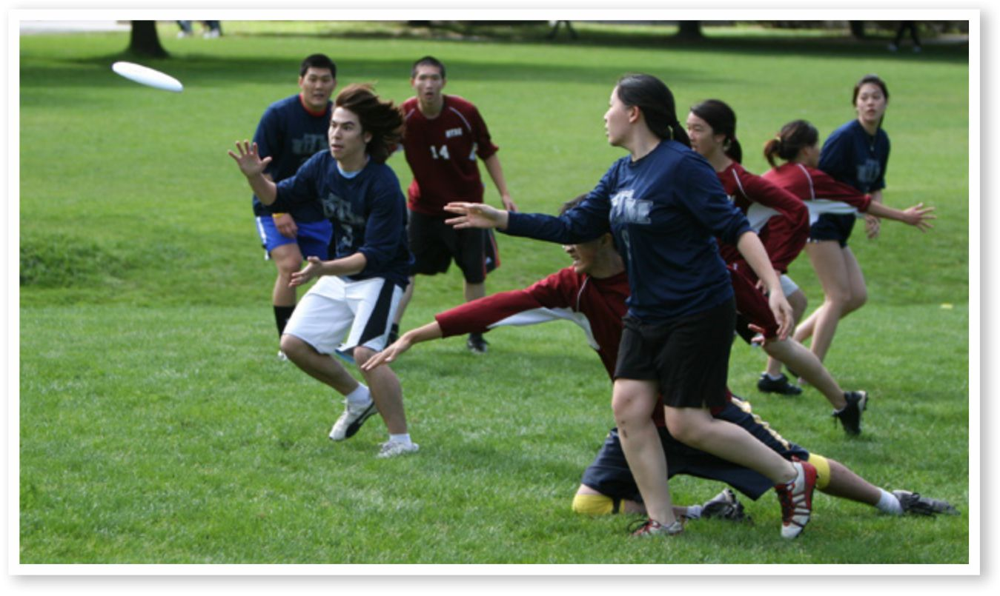
Ultimate frisbee. Juiz de Fora, MG, 2013.
A marcação é muito importante, e quem estiver nessa função pode e deve tentar prejudicar o lançamento e também capturar o frisbee quando este for lançado. Entretanto, não pode tirá-lo das mãos do oponente.
O mais interessante no ultimate frisbee é que os próprios jogadores arbitram a partida. Desse modo, têm a responsabilidade de seguir a regras e administrar o jogo, o qual tem 100 minutos de duração ou até que sejam marcados 17 gols.
Como o espírito de jogo é o princípio mais importante, os jogadores se comportam respeitosamente em campo, com o objetivo de seguir o fair play (jogo limpo, com lealdade). Para tanto, todos precisam:
- conhecer as regras;
- ser imparciais, honestos e objetivos;
- dialogar com ambas as equipes, a fim de esclarecer os ocorridos, permitindo que os adversários também se expressem;
- solucionar qualquer impasse com tranquilidade e respeito;
- marcar com segurança as faltas significativas e somente quando estas impactarem no resultado do jogo.
Organizando a atividade
Materiais necessários: cones, apito, coletes e frisbee.
Número de aulas estimado: 3
Objetivo: experimentar e fruir o esporte de invasão ultimate frisbee, valorizando o trabalho coletivo e o protagonismo, empregando técnicas e táticas básicas e respeitando as regras.
Como em nossas escolas raramente há campos disponíveis com as dimensões oficiais, será necessário fazer, usando a criatividade, uma adequação para a realidade. É possível se trabalhar com qualquer medida de
EDUCAÇÃO FÍSICA 38
campo, desde que haja liberdade para a corrida dos alunos e as marcações possam ser feitas proporcionalmente à área total do campo.
Marcar uma linha com aproximadamente dois metros da linha de fundo já é suficiente para configurar a endzone, onde ocorrerão os pontos. Ao meio (entre as duas endzones) estará o campo livre para que sejam trabalhados os passes, tentando fazer o frisbee chegar até a mão de um companheiro na endzone.
Os alunos que não estiverem em poder do frisbee poderão se deslocar livremente, buscando o melhor posicionamento para recebê-lo e entrar com a posse desse disco na endzone. Se a equipe adversária interceptar a jogada, a posse ficará com a equipe que estava defendendo, a qual passará a atacar, buscando penetrar na endzone adversária com o frisbee a fim de obter pontuação.
Sérgio Bonfim dos Santos
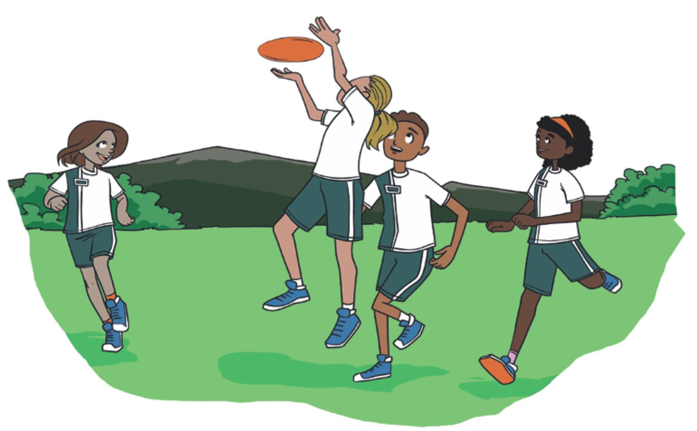
Basquetebol
Esse esporte surgiu nos Estados Unidos, no estado de Massachusetts, durante um severo inverno de 1891, conforme dados da Confederação Brasileira de Basquete (CBB). Nesse período, as atividades físicas não podiam ser feitas ao ar livre e as aulas de Educação Física limitavam-se à ginástica, tornando-se repetitivas e enfadonhas.
Nesse momento, foi desenvolvido pelo professor de Educação Física James Naismith, canadense, um jogo que poderia ser praticado tanto ao ar livre como em espaço fechado, no
EDUCAÇÃO FÍSICA 39
verão e no inverno. Ele projetou um jogo que tivesse certo grau de dificuldade, cujo objetivo era atingir, com uma bola, um alvo fixo utilizando as mãos.
Além dessas características, a ideia era que o jogo fosse coletivo, mas não agressivo como o futebol americano. Então ele criou as regras e, assim, nascia o basquetebol.
Conheça as regras da disputa do basquete nos Jogos Olímpicos
O basquete está no calendário dos Jogos Olímpicos desde a edição de 1936 (disputada em Berlim, na Alemanha). Inicialmente, apenas os homens competiam. O basquete feminino entrou nas Olimpíadas em 1976, em Montreal, no Canadá. Os Estados Unidos são os maiores vencedores tanto no masculino quanto no feminino. Na história do basquete olímpico, o Brasil ganhou cinco medalhas: uma prata no feminino em 1996 e quatro bronzes na modalidade masculina.
[...]
As regras do basquete olímpico são as seguintes: dois times de cinco jogadores disputam as partidas. As substituições são permitidas a todo momento. Ao todo, sete jogadores podem ficar no banco. A pontuação é contada por cestas. Lances livres, cobrados após infrações, valem um ponto. Cestas de dentro da área (que mede 6m75) valem dois pontos. Cestas de fora da área valem três pontos. A equipe que ao final dos quatro tempos de dez minutos fizer mais pontos será vencedora. A quadra de basquete mede 25 x 15 m.
A fórmula da competição do torneio olímpico será idêntica na modalidade masculina e feminina. Doze times estão divididos em dois grupos de seis. Os quatro melhores de cada grupo vão para o mata-mata. As quartas de final são definidas por cruzamento olímpico (o primeiro de um grupo joga contra o quarto de outro. Segundo e terceiro colocados se enfrentam). Os vencedores disputam as semifinais. Os vencedores das semifinais disputam a medalha de ouro. Os perdedores disputam o bronze.
O basquete passou a valer medalha nos Jogos de Berlim 1936 e de lá pra cá, os Estados Unidos somam 21 ouros, sendo 14 no masculino e sete no feminino. O Brasil foi vice-campeão entre as mulheres em Atlanta 1996 e quatro vezes medalha de bronze.
O basquete é gerido pela Fiba (Federação Internacional de Basquete). No Brasil, o responsável é CBB (Confederação Brasileira de Basquete).
CONHEÇA as regras da disputa do basquete nos Jogos Olímpicos. Portal EBC. Disponível em: https://tinyurl.com/yc4784k4. Acesso em: 17 abr. 2022.Em um jogo tradicional de basquete, duas equipes, uma para cada lado da quadra, iniciam o jogo com 5 jogadores cada. Uma bola lançada ao alto configura a disputa entre dois jogadores adversários para começar a partida. O objetivo do jogo é, por meio de dribles, passes e transições velozes ou cadenciadas, invadir o espaço adversário. Os jogadores buscam criar uma situação confortável para tentar fazer uma cesta, de dois ou três pontos, com arremessos que podem ser de longa, média e curta distância, assim como bandejas e enterradas, jogadas feitas o mais próximo possível da cesta.
EDUCAÇÃO FÍSICA 40
Trata-se de um dos esportes mais disputados no universo da competição e um dos mais praticados como lazer. Atualmente, boa parte de suas regras assemelham-se às da Federação Internacional de Basquete (FIBA) e da National Basketball Association (NBA), que é o famoso basquete norte-americano, porém ainda existem algumas diferenças consideráveis.
Organizando a atividade
Materiais necessários: coletes, apito e bola de basquete.
Número de aulas estimado: 6
Objetivo: experimentar e fruir o esporte de invasão basquetebol, valorizando o trabalho coletivo e o protagonismo, empregando técnicas e táticas básicas e respeitando as regras.
Por ser um esporte mais tradicional e há muito tempo bem enraizado em nosso país, verifica-se a existência de quadras poliesportivas em praticamente todas as escolas. Na ausência de uma quadra existem espaços livres que podem ser usados para essas práticas. Para dar início ao jogo devem ser escolhidas duas ou mais equipes, dependendo do número de alunos em sua realidade diária, cada equipe com 5 jogadores.
Para que exista equilíbrio no jogo, os jogadores devem ser distribuídos de acordo com distintas características: dois dos alunos mais altos serão os pivôs, jogando mais próximo da cesta e, devido ao tamanho e força física, trabalhando com arremessos curtos, muitos giros e assistências (passes que são convertidos em cestas). Dois alunos mais fortes e rápidos ocuparão a posição de alas ou laterais, onde é preciso boa habilidade para dribles, passes e arremessos,
EDUCAÇÃO FÍSICA 41
tendo a função de auxiliar os pivôs na marcação e jogando no ataque. O último e quinto integrante, geralmente mais baixo e com bom controle de bola, ocupa a posição de armador, ficando responsável pela organização e primeira distribuição das jogadas, além de arremessos de média e longa distância. Vale ressaltar que orientar os alunos sobre o fato de cada um ter posição definida não significa que devem ficar restritos a apenas um setor ou situação que venha ocorrer durante a partida.
Basquete de quatro cantos
Diferentemente do basquete tradicional, em que o número de jogadores está limitado a cinco, no basquete de quatro cantos podem jogar quantos jogadores você achar necessário ou viável.
O jogo se inicia com apenas uma bola e tende a ficar bem embolado, mas as alternativas começam a ser buscadas. É aí que você, professor, conhecendo sua turma, passa a fazer adaptações visando maior dinamismo e melhor aproveitamento do tempo efetivo de jogo por aluno.
Organizando a atividade
Materiais necessários: coletes, apito, duas bolas de basquete ou mais (leves, preferencialmente) e quatro arcos.
Número de aulas estimado: 1 ou 2
Objetivo: experimentar e fruir o esporte de invasão basquete de quatro cantos, valorizando o trabalho coletivo e o protagonismo, empregando técnicas e táticas básicas e respeitando as regras.
Quatro alunos ficarão posicionados nos cantos da quadra, segurando um arco cada um, para serem as cestas. Como alternativa, podem ser inseridas duas bolas já no começo da partida, sendo que as equipes podem focar em qualquer uma delas. Qualquer uma das cestas destinadas ao seu time poderá receber qualquer uma das bolas que estão em jogo. Veja como ficarão as posições dos alunos em quadra.
Para deixar o jogo mais dinâmico e acelerado, basta colocar um número maior de bolas, e rapidamente as equipes se organizam para jogar com bolas localizadas nos setores mais próximos a elas. Além disso, aumentando o número de bolas, aumenta a tendência de um placar consideravelmente mais alto.
Quem estiver sem a posse da bola pode se movimentar livremente pela quadra, a fim de se posicionar em boas condições para receber a bola e tentar fazer a cesta. Entretanto, segundo a regra, ao recebê-la, deve parar no lugar, procurando arremessar ou tocar a bola para um colega que esteja em melhores condições para fazer a cesta.
A cada cesta convertida você pode recomeçar a partida, lançando a bola aleatoriamente para o alto. Vence a equipe que converter o maior número de cestas dentro do tempo estipulado.
EDUCAÇÃO FÍSICA 42
Avaliando
Peça aos alunos que reflitam sobre as expectativas de aprendizagem que tinham no início e falem sobre como foi a experiência e quais os aprendizados desenvolvidos. Registre os depoimentos e comente a participação de cada um.
Algumas perguntas preelaboradas podem ser utilizadas: os objetivos foram alcançados? Quais as dificuldades encontradas? Qual das duas maneiras de jogar basquetebol gostaram mais? Compreenderam bem as regras dos esportes?
Corpo em Ação
Esportes técnico-combinatórios
Assim como nos esportes anteriores, relembre com os alunos o que são esportes técnico-combinatórios e peça que citem exemplos. São aqueles com padrões e os respectivos graus de dificuldade, códigos ou critérios já estabelecidos, e suas regras determinam, em vez de quem vai mais longe ou mais rápido, por exemplo, a execução mais próxima ou mais perfeita relacionada ao padrão (estético) exigido e esperado. Quanto maior for o grau de dificuldade acrobática, maior será a pontuação.
Exemplos de esportes técnico-combinatórios: ginástica acrobática, aeróbica, artística e rítmica, saltos ornamentais, nado sincronizado, patinação artística, entre outros.
Patinação artística sobre rodas
Essa modalidade foi criada pelo belga Jean-Joseph Merlin, no ano de 1750, partindo do princípio de que a patinação artística tradicional ficava dependente dos lagos congelados devido ao rigoroso inverno europeu, e nos períodos mais quentes do ano a atividade ficava restrita apenas aos locais que tivessem arenas específicas para a manutenção das baixíssimas temperaturas. Ele decidiu criar uma alternativa para os amantes do esporte que gostam do clima do verão e, principalmente, de praticar esportes em ambientes abertos, onde o contato com a natureza é um dos atrativos somados ao prazer da atividade.
Ao criar os patins sobre rodas, inicialmente esse inventor pensou em um patins com apenas uma roda em cada pé, porém a criação não foi muito bem-sucedida e teve um início desanimador, que acabou não despertando o interesse das pessoas. Posteriormente, esse desinteresse acabou levando à busca pelo aperfeiçoamento do equipamento, que passou a ter quatro rodas (dois pares paralelos) em cada pé e assumiu o formato que conhecemos atualmente.
EDUCAÇÃO FÍSICA 43
As imagens a seguir mostram a patinação artística em dupla e individual. Na primeira, o casal está realizando o footwork, trabalho de movimentação das pernas na preparação das rotinas a serem executadas durante a coreografia. A segunda mostra a patinação artística individual, com a patinadora executando a reprodução de uma figura preexistente.
Um dos principais atrativos dos patins sobre rodas é que os patinadores ganham muitas opções de terrenos para praticar, pois conseguem rodar em qualquer tipo de área pavimentada, como calçadas, e em ringues específicos, tanto cobertos como a céu aberto.
Vladimir Alcorte / Ytimg.com 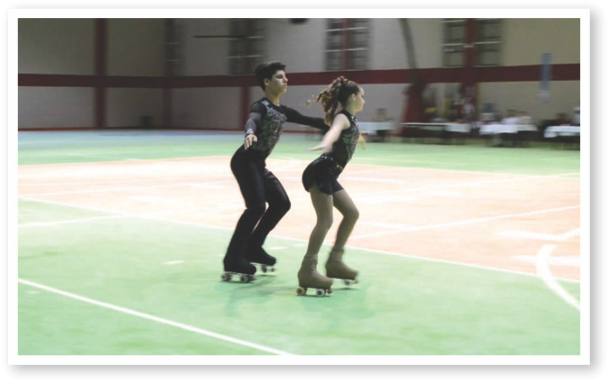
Patinação artística em dupla. Novo Hamburgo, RS, 2016.S.I / Secom-PMC 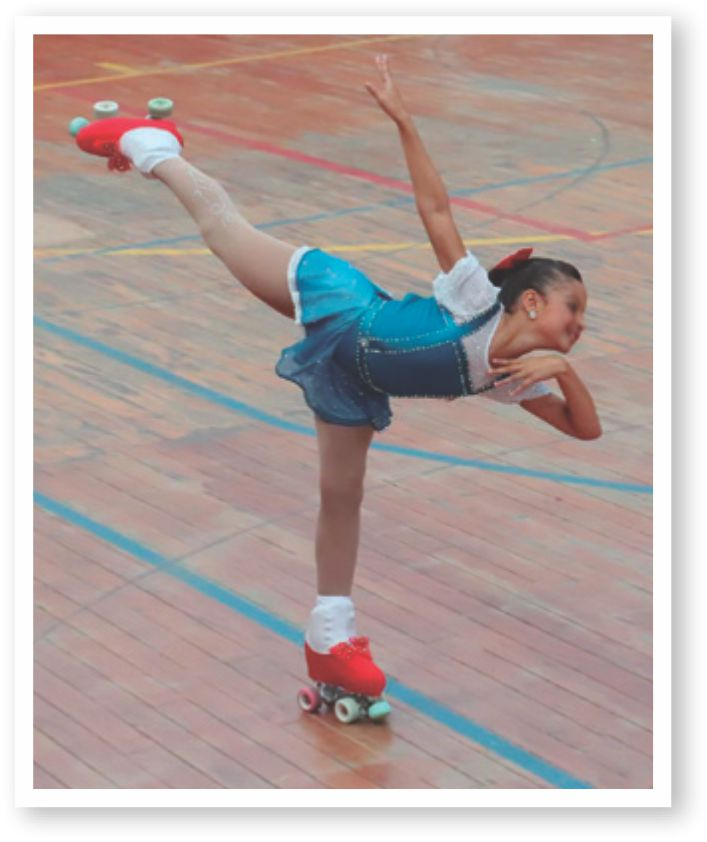
Patinação artística individual. Cubatão, SP, 2018.Sugestão de Leitura
Esporte e discriminação
José Eduardo Costa de Oliveira
Acesse este artigo para aprofundar seus conhecimentos sobre a discriminação nos esportes.
Disponível em: https://www.efdeportes.com/efd157/esporte-e-discriminacao.htm. Acesso em: 23 abr. 2022.
A patinação artística sobre rodas se divide nas seguintes modalidades:
Individual – Apenas um patinador executa suas rotinas sozinho, regido por uma música que escolher. Ele é avaliado de acordo com a qualidade técnica dos movimentos apresentados, que são baseados em técnicas predefinidas.
Duplas – Formadas por um homem e uma mulher, que incrementam os movimentos das apresentações simples, pois acrescentam elementos técnicos como os levantamentos, piruetas aéreas sincronizadas, giros sincronizados de solo e arremessos, que são movimentos de grande dificuldade, porém de muita beleza plástica.
Dança – Trata-se de uma modalidade puramente artística, uma vez que não são permitidas acrobacias. A dança é o único elemento avaliado nas apresentações.
Precisão – Envolve coreografias sincronizadas, ensaiadas e apresentadas em grupos que variam de 8 até 24 patinadores, os quais são avaliados pela sincronia, precisão e padrão dos movimentos.
As trilhas sonoras são muito importantes em todo o conjunto da obra, ficando à livre escolha dos patinadores e seus treinadores. Geralmente os grandes clássicos e os maiores hits da música mundial são os preferidos e escolhidos, principalmente para causar grande impacto e emocionar o público.
EDUCAÇÃO FÍSICA 44
Com relação aos movimentos, são listados a seguir alguns dos mais relevantes
- Trabalho dos pés (footwork): é a sequência do movimento das pernas que os patinadores realizam para se movimentar.
- Piruetas (spins): quando os patinadores executam giros em torno do seu próprio eixo.
- Saltos: ocorre quando os patinadores se lançam do solo verticalmente.
- Levantamentos: executados em duplas, quando o homem levanta a mulher acima da cabeça, mostrando a plasticidade dos movimentos.
- Figuras: são o encadeamento de movimentos em que um ginasta sustenta o outro, formando uma figura, permanecendo nessa posição por aproximadamente 4 segundos. Os patinadores podem fazer a reprodução de uma figura que já existe, como referência, ou utilizar sua criatividade para compor novas figuras.
Organizando a atividade
Materiais necessários: patins (podendo ser in-line ou quatro rodas), aparelho de som, área ampla e com superfície lisa, equipamentos de segurança (capacete, cotoveleiras, joelheiras e luvas).
Número de aulas estimado: 6
Objetivo: experimentar e fruir o esporte técnico-combinatório patinação, valorizando o trabalho coletivo e o protagonismo, empregando técnicas e táticas básicas, respeitando as regras e cuidando da integridade física.
Como nem todos os alunos sabem patinar, ou até mesmo nunca tiveram uma experiência com um par de patins, é de grande importância começar pelo básico, a fim de que os alunos testem seu equilíbrio tentando se deslocar para frente com os patins. Primeiramente, deve ser com apoio de um corrimão, de uma parede ou com o suporte do professor ou dos seus colegas. Quando passarem a ter maior conforto e segurança na questão do equilíbrio e do entendimento de como se propulsiona os patins, permita que realizem manobras com curvas para a direita e para a esquerda, nos retornos, cruzando e descruzando as bases.
Todos esses movimentos devem ser iniciados aos poucos e com cautela, para evitar quedas bruscas que possam causar traumas e lesões
Antes de iniciar a atividade prática, você pode traçar metas para melhorar o nível de domínio da patinação, por meio dos exercícios:
- Patinar várias vezes de um lado para outro e em linha reta.
- Patinar fazendo zigue-zague.
- Patinar mudando a direção aleatoriamente (frente, costas, lado direito e lado esquerdo).
- Patinar executando pequenos saltos.
EDUCAÇÃO FÍSICA 45
Atividade prática 1:
- Organize a turma em grupos.
- Escolha uma música para cada grupo.
- Crie uma coreografia simples para que seja executada por partes, sendo que cada aluno do grupo fará uma parte da coreografia.
- Atribua uma nota pela soma das partes que cada aluno executou.
- Determine algumas tarefas/movimentos/técnicas, que devem ser cumpridos obrigatoriamente, e penalidades aplicadas para determinados itens obrigatórios.
Sérgio Bonfim dos Santos
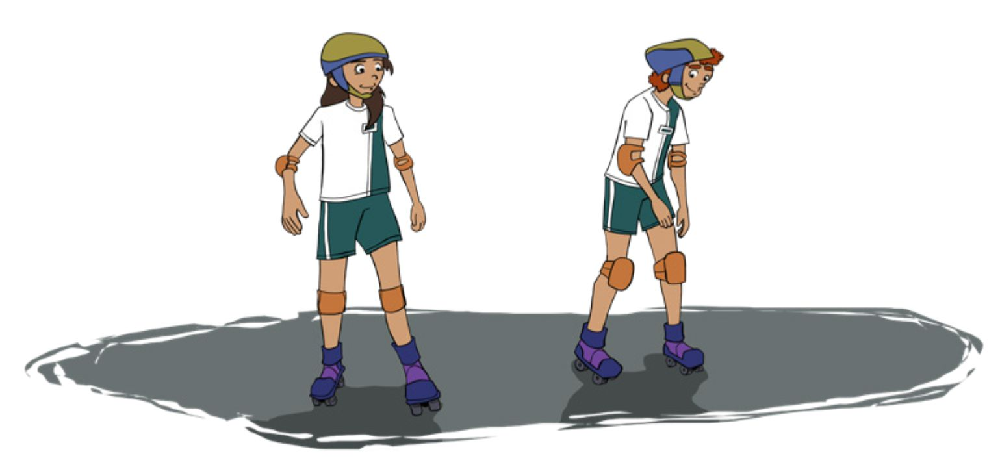
Atividade prática 2:
- Organize a turma em duplas mistas (um aluno e uma aluna, dois alunos ou duas alunas).
- Escolha uma música para cada dupla.
- Crie uma coreografia simples, que promova interação entre a dupla na execução dos movimentos.
- Atribua uma nota pela qualidade técnica da coreografia que a dupla executou.
- Determine algumas tarefas/movimentos/técnicas, que devem ser cumpridos obrigatoriamente, e penalidades aplicadas para determinados itens obrigatórios.
@ Sistema Logosófico de Educação
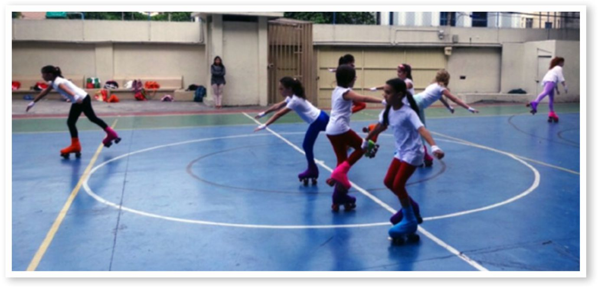
Alunas de patinação artística. Rio de Janeiro, RJ, 2015.
EDUCAÇÃO FÍSICA 46
Patinação:
uma alternativa nas aulas de Educação Física
Nas crianças, a patinação apresenta-se como um jogo motivante, de vertigem, produz sensações de dominação do medo, de cair e da velocidade. Desenvolve vários aspectos psicomotores que são trabalhados nas aulas de Educação Física. Os professores podem aproveitar estes aspectos e o auge da patinação de rua para introduzi-lo na escola como um novo recurso (NICOLÁS, 2011).
[...]
Na escola, a patinação permitirá aos alunos a experiência de um novo ambiente que é estar sobre quatro rodas. Os patins como um meio para jogar com o equilíbrio, desenvolver a coordenação entre as distintas partes do corpo, melhorar a autoconfiança do aluno, a cooperação e ajuda entre companheiros, a responsabilidade cívica, a imaginação, as habilidades, entre outros, despertar o interesse por uma nova atividade, descobrir as diferentes modalidades da patinação como: hockey, velocidade, artístico, slalom e radical; encontrar um novo meio de transporte (NICOLÁS, 2011).
PARDO, Cindya Katerine. Disponível em: https://repositorio.uniceub.br/jspui/bitstream/235/7568/1/CYNDIA%20KATERINE%20PARDO.pdf. Acesso em: 26 maio 2022Avaliando
Proponha aos alunos uma composição coreográfica, que poderá ser individual, em duplas ou em grupos. Avalie a participação deles na criação dos movimentos, na escolha da música, na aceitação das ideias dos colegas, na inclusão de todos. Observe se conseguem realizar movimentos básicos, superando medos, bem como se arriscam a executar movimentos mais complexos, resolvendo desafios corporais próprios do esporte.
Para avaliar a unidade temática Esporte, proponha a produção de um texto sobre a vivência prática e as reflexões realizadas sobre os esportes realizados nas aulas. Procure estabelecer interação com Língua Portuguesa quanto à tipologia textual, a ortografia e outras características de um bom texto.
Avalie a compreensão que tiveram de cada modalidade, os sentimentos surgidos, as problemáticas vividas, as opiniões formadas, o que mais gostaram, o que menos gostaram.
Proponha também uma discussão com os alunos sobre as questões surgidas durante todo o processo de trabalho com essa unidade temática, bem como as que se fazem presente no meio esportivo: discriminação por cor, etnia, gênero, diferentes graus de habilidade; prazer em jogar; desconhecimento de alguns esportes vivenciados por serem pouco divulgados pela mídia, por não serem realizados nos espaços da comunidade e outras questões relevantes.
EDUCAÇÃO FÍSICA 47
Iniciando a busca
Ao trabalhar com essa unidade temática, espera-se que os alunos desenvolvam as seguintes habilidades e competências:
- (EF67EF08) Experimentar e fruir exercícios físicos que solicitem diferentes capacidades físicas, identificando seus tipos (força, velocidade, resistência, flexibilidade) e as sensações corporais provocadas pela sua prática.
- (EF67EF09) Construir, coletivamente, procedimentos e normas de convívio que viabilizem a participação de todos na prática de exercícios físicos, com o objetivo de promover a saúde
- (EF67EF10) Diferenciar exercício físico de atividade física e propor alternativas para a prática de exercícios físicos dentro e fora do ambiente escolar.
- Competências específicas: 1, 8, 10
- Competências gerais: 1, 8, 10
- Competências de linguagem: 2, 6
O cenário mundial atual aponta para uma sociedade sedentária, com o aumento da obesidade, em parte relacionada à falta de atividade física. A maioria das pessoas relata a falta de tempo para práticas corporais, pois precisam passar muitas horas de seus dias trabalhando sentadas e ainda utilizam o seu tempo livre optando por atividades de baixa movimentação corporal, como assistir televisão, jogar jogos on-line e em video game, usar redes sociais, etc.
No Brasil, não é diferente. O sedentarismo é um dos grandes problemas sociais. De acordo com a Sociedade Brasileira de Cardiologia (SBC), a população gasta bem menos calorias do que há cem anos. O estilo de vida atual é responsável, entre outros fatores, por 54% do risco de infarto e por 50% do risco de derrame cerebral, que são muitas das causas de morte no país. Portanto, é necessário conscientizar e incentivar a população para a importância de realizarem atividades físicas durante toda a sua vida (POMERLAU, 2000).
Sendo a escola um espaço de conhecimento, vê-se a importância de tratar essa temática com os alunos, primeiramente por serem também vítimas desse estilo de vida e, segundo, para compreenderem os benefícios das práticas corporais na vida das pessoas, sendo eles agentes de comunicação na comunidade a que pertencem.
Para tanto, a proposta é um trabalho interdisciplinar envolvendo Educação Física, Língua Portuguesa e Ciências. Converse com seus colegas professores da escola para trabalharem juntos, explicando a proposta interdisciplinar que envolve a ginástica.
EDUCAÇÃO FÍSICA 48
Felipe Satel/ EEJGJ
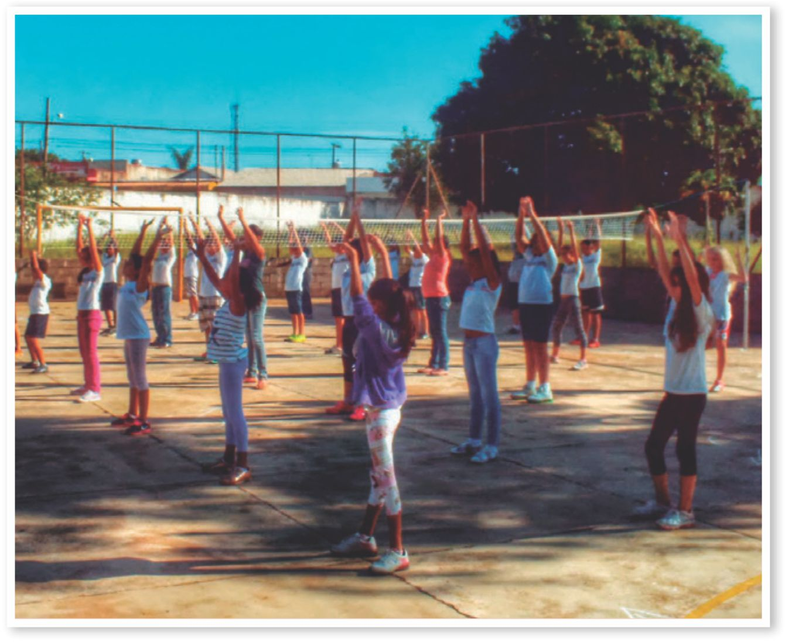
Praticando ginástica na escola. Uberlândia, MG, 2015.
Glentree/Pixabay
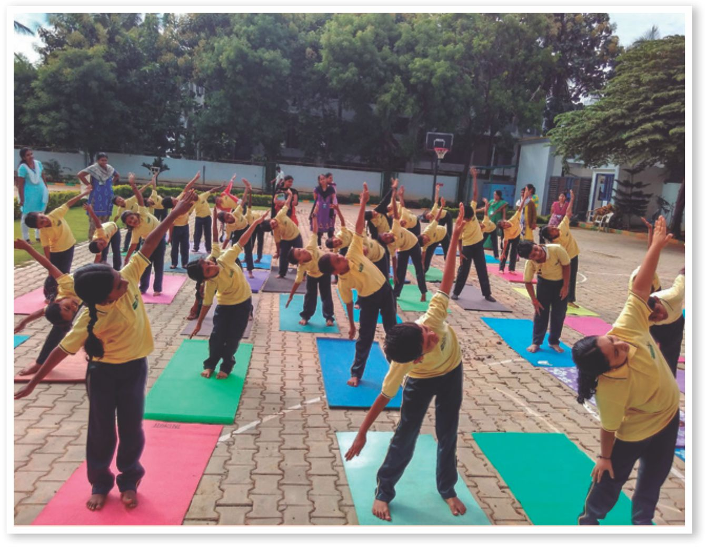
Praticando ginástica na escola. Bangalore, Índia, 2017.
Converse com os alunos a respeito da proposta interdisciplinar e da importância do envolvimento de todos nos estudos, práticas corporais e interação com a comunidade.
Depois, inicie conversando com os alunos sobre as funções da ginástica para a nossa sociedade. Escreva no quadro de giz alguns tipos de ginástica e suas funções. Use o texto a seguir, se necessário.
Ginástica de competição: o atleta visa à vitória, com muito treinamento, em busca da perfeição dos movimentos corporais.
Sugestão de Filme
Muito além do peso
Ano: 2012.
Direção: Douglas Barr.
Hoje em dia, um terço das crianças brasileiras está acima do peso. Esta é a primeira geração a apresentar doenças antes restritas aos adultos, como depressão, diabetes e problemas cardiovasculares. Este documentário estuda o caso da obesidade infantil principalmente no território nacional, mas também nos outros países do mundo, entrevistando pais, representantes das escolas, membros do governo e responsáveis pela publicidade de alimentos. Dura realidade sobre obesidade, um incentivo sem necessitar de palavras para se envolver rapidamente com atividade física.
Divulgação / Maria Farinha Filmes
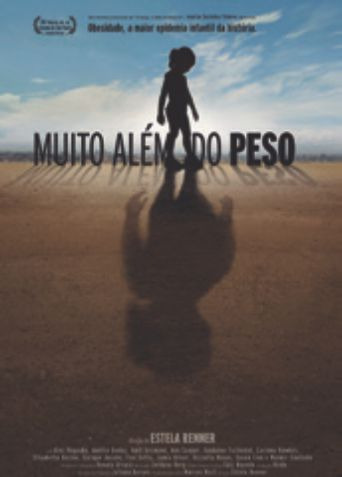
EDUCAÇÃO FÍSICA 49
Sugestão de Leitura
Saúde é o que interessa! O resto não tem pressa!
Gilson José Caetano.
Será que a atividade física dá conta de proporcionar saúde aos seus praticantes? Outros fatores poderiam influenciar as condições de saúde de cada um de nós? Que fatores seriam estes? Mas, na verdade, o que é ser saudável? E “o resto não tem pressa”, o que pode ser?
Disponível em: http://www.educadores.diaadia.pr.gov.br/arquivos/File/livro_didatico/edfisica.pdf. Acesso em: 20 maio 2022.
Ginástica de condicionamento físico: praticada em academias, com vistas à saúde (prevenção e diminuição de doenças), preparação física de atletas, estética, etc.
Ginásticas fisioterapêuticas: para tratamento de pessoas com problemas de saúde ou lesões.
Ginástica de conscientização corporal: voltadas a melhorar a postura, a flexibilidade e a percepção do próprio corpo.
Ginástica de demonstração: conhecida como Ginástica Para Todos (GPT) ou Ginástica Geral (GG) tem a finalidade de interação e vivência de elementos ginásticos para apresentação.
Solicite que os alunos citem exemplos de ginásticas que eles conhecem, quais já praticaram ou viram alguém realizando. Veja alguns:
Ginástica de competição: artística, rítmica, aeróbica, acrobática, trampolim, etc.
Ginástica de condicionamento físico: step, aeróbica, jump, localizada, bike indoor, corrida, caminhada, trilhas, musculação, laboral, treinamento funcional, crossfit, etc
Ginástica de consciência corporal: alongamento, Reeducação Postural Global (RPG), ioga, tai chi chuan, biodança, antiginástica, etc.
A pesquisa
Elabore junto com os alunos um questionário de pesquisa sobre a rotina de práticas corporais na vida das pessoas, para ser realizado na comunidade local. Segue um exemplo, que pode ser complementado com outras questões que considerar importantes.
- Qual é o seu nome?
- Qual é a sua idade?
- Você é portador de alguma doença crônica, como diabetes, colesterol, obesidade e pressão alta, ou problemas cardíacos ou respiratórios?
- Você tem uma alimentação balanceada? O que costuma comer?
- Qual é o lazer que pratica?
- Você realiza alguma prática corporal? Qual ou quais? Se não pratica, justifique o motivo. Se já praticou e parou, explique o porquê.
- Quanto tempo utiliza para realizar as práticas corporais (dias e horas)?
Depois, peça que os alunos entrevistem pessoas da comunidade local. Dê um prazo de alguns dias para essa atividade.
Com os questionários respondidos em mãos, em uma roda de conversa, discutam sobre as respostas das entrevistas realizadas, computando os dados em tabelas ou gráficos. Apresente aos alunos o resultado da
EDUCAÇÃO FÍSICA 50
Pesquisa Nacional de Saúde – 2015, do IBGE, para comparações e discussões, disponível pelo link https://biblioteca.ibge.gov.br/visualizacao/livros/liv100364.pdf. Acesso em: 6 maio 2022.
Análise dos resultados
Depois da apresentação dos resultados, converse com os alunos sobre o impacto das atividades físicas no corpo e nas emoções. Faça a interdisciplinaridade com Ciências. O texto a seguir pode servir de subsídio para o trabalho com essa temática.
Benefícios das práticas corporais
Musculoesquelético:auxilia na melhora da força e do tônus muscular, da flexibilidade, do fortalecimento dos ossos e das articulações.
Cardiorrespiratório: esse efeito ocorre no coração e na circulação, definido como aptidão cardiovascular. O termo cardiorrespiratório se dá a partir da compreensão da importância da captação de oxigênio e seu transporte pelo corpo. Já o termo aeróbico indica a captação, o transporte e a utilização de oxigênio que são melhoradas a partir de atividades aeróbicas. O exercício aeróbico é aquele no qual a pessoa trabalha seus músculos de maneira rítmica e com oxigênio, ou seja, a geração de energia pelos músculos é feita com utilização de oxigênio. Estimula também o sistema metabólico e vascular.
Prevenção e controle de doenças: a prática de exercícios físicos auxilia na perda de peso e da porcentagem de gordura corporal, na redução da pressão arterial em repouso, na melhora do diabetes, na diminuição do colesterol total e aumento do HDL-colesterol (o “colesterol bom”); ajuda na regulação das substâncias relacionadas ao sistema nervoso, na melhora do fluxo de sangue para o cérebro, na capacidade de lidar com problemas e com o estresse, na recuperação da autoestima. Há redução da ansiedade e do estresse, ajudando no tratamento da depressão, pois há liberação de serotonina (hormônio que dá uma sensação de bem-estar).
Convívio social do indivíduo: momento de se relacionar com outras pessoas.
O IMC – Índice de Massa Corpórea
Explique aos alunos o que é IMC e realize o teste com eles. Para isso, será necessário que todos se pesem e meçam suas alturas. Você pode levar para a sala de aula uma balança e uma trena ou solicitar que cada um faça as medições em casa e traga os dados anotados no caderno. Não se esqueça de avisar que as medições devem ser feitas com os pés descalços.
EDUCAÇÃO FÍSICA 51
A fórmula usada para o cálculo do IMC é o peso em kg dividido pela altura em metros ao quadrado. É representado pela seguinte equação:

Depois que os alunos fizerem o cálculo do IMC, apresente a eles o quadro a seguir para conferirem os dados obtidos. Nesse momento, é importante reforçar a importância do respeito às diferenças, pois pode haver na turma alunos acima do IMC recomendado.
| Acima de 40,00 | Obesidade Grau III | Aqui o sinal é vermelho, com forte probabilidade de já existirem doenças muito graves associadas. O tratamento deve ser ainda mais urgente. |
| 35,0 – 39.9 | Obesidade Grau II | Mesmo que seus exames aparentem estar normais, é hora de se cuidar, iniciando mudanças no estilo de vida com o acompanhamento próximo de profissionais de saúde. |
| 30,0 – 34,9 | Obesidade Grau I | Sinal de alerta! Chegou na hora de se cuidar, mesmo que seus exames sejam normais. Vamos dar início a mudanças hoje! Cuide de sua alimentação. Você precisa iniciar um acompanhamento com nutricionista e/ou endocrinologista. |
| 25,0 – 29,9 | Sobrepeso / pré-obesidade | Ele é, na verdade, uma pré-obesidade e muitas pessoas nessa faixa já apresentam doenças associadas, como diabetes e hipertensão. Importante rever hábitos e buscar ajuda antes de, por uma série de fatores, entrar na faixa da obesidade pra valer. |
| 18,6 – 24,9 | Peso normal | Que bom que você está com o peso normal! E o melhor jeito de continuar assim é mantendo um estilo de vida ativo e uma alimentação equilibrada. |
| Abaixo de 18,5 | Abaixo do peso | Procure um médico. Algumas pessoas têm um baixo peso por características do seu organismo e tudo bem. Outras podem estar enfrentando problemas, como a desnutrição. É preciso saber qual é o caso. |
Ao propor a vivência de práticas corporais aos alunos, explique a eles que, para escolher uma delas, é importante sentir prazer em realizá-la, pois o objetivo é a prática constante. Por isso, é necessário procurar práticas corporais (ginástica, jogo, esporte, dança, luta, aventura, etc.) regulares, ou mesmo de lazer, que proporcionem bem-estar, alegria, autoestima, entre outros benefícios.
Sempre é bom lembrar que a prática de movimentos corporais não deve ser motivada meramente por questões estéticas. No caso de prevenção e controle de doenças, a escolha deve ser de acordo com a necessidade do organismo, muitas vezes, não sendo a mais prazerosa, mas necessária. É importante um atestado médico com as restrições para cada tipo de doença. Também é importante pensar nas atividades mais adequadas levando em consideração: a idade da pessoa, as condições físicas em que se encontram, as habilidades específicas necessárias para a realização da atividade, ser iniciante, etc.
EDUCAÇÃO FÍSICA 52
Corpo em Ação
Ginástica de conscientização corporal
As ginásticas de conscientização corporal consistem em práticas que se utilizam de movimentos brandos e lentos, como a realização de posturas e exercícios respiratórios, visando oferecer aos seus praticantes melhor percepção e entendimento do próprio corpo. Além disso, tais exercícios ajudam a prevenir lesões e são bastante benéficos para a saúde mental. Costumam também desenvolver capacidades motoras como força, equilíbrio e flexibilidade.
Ioga
Ioga significa união, pois engloba movimentos corporais associados à mente e às emoções. Originária da Índia, sendo seu criador Shiva ou Natarája, rei dos bailarinos, pode ser escrita com Y – yoga, como nas suas origens, ou com I – ioga, em Língua Portuguesa.
Pode ser considerada como uma filosofia de vida, uma técnica ou um tipo de ginástica que relaxa, acalma, aumenta a flexibilidade e, principalmente, faz os participantes perceberem seu próprio corpo, já que os movimentos são leves e suaves.
O que a diferencia de outras ginásticas é que todos os órgãos internos e todas as glândulas são igualmente massageados durante a prática. Além disso, proporciona o fortalecimento dos músculos do corpo e, por meio de exercícios de permanência em determinadas postura, possibilita melhor alinhamento da coluna vertebral.
Na Educação Física escolar, os conhecimentos obtidos com o estudo da ioga podem ser associados aos demais conteúdos da disciplina, por meio de diálogos que envolvem a estrutura do corpo, os ossos e articulações.
peoplecreations/Freepik 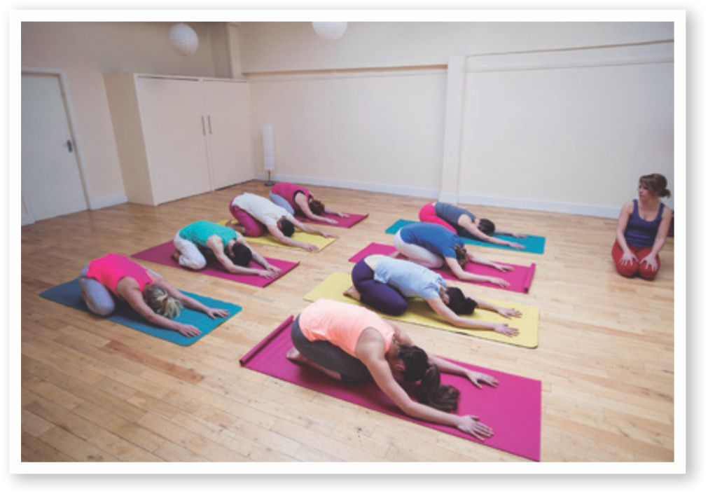
Aula de iogaGPE/SECOM 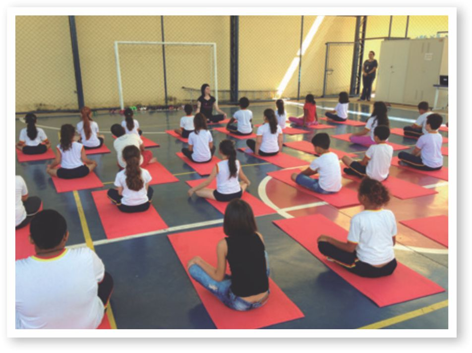
Estudantes realizam prática de ioga em escola municipal. Sorocaba, SP, 2018.EDUCAÇÃO FÍSICA 53
Sugestão de Leitura
O que são capacidades físicas? Como treinar?
Como treinar?
Bruno Morgado.
O texto apresenta quais são as capacidades físicas básicas, explicando detalhadamente cada uma delas.
Disponível em: https://www.buscarsaude.com.br/o-que-sao-capacidades-fisicas-como-treinar/. Acesso em: 19 maio 2022.
Benefícios da yoga
Saiba mais sobre os benefícios do yoga para o sistema respiratório, nervoso, mente e corpo
Aliado importante para combater problemas psicofísicos e emocionais, o yoga ajuda a manter uma rotina equilibrada.
[...]
Em 2017, o Ministério da Saúde aprovou duas portarias, uma n. 145, em janeiro, e a outra, n. 849, em março do mesmo ano, as quais se referem à Política Nacional das Práticas Integrativas e Complementares (PINPIC) no Sistema Único de Saúde (SUS), incluindo o yoga e meditação como formas terapêuticas para saúde do corpo e da mente.
[...]
Yoga: autocuidado e promoção à saúdeDe acordo resultados do artigo “Yoga e promoção da saúde”, publicado na Biblioteca Eletrônica Científica Online (SCIELO), em 2014 por representantes da Associação Brasileira de Saúde Coletiva (ABRASCO), 74,74% dos participantes de um grupo de Yoga, revelaram que a prática trouxe eficácia para aliviar dores, estresse, além de fomentar aumento de autoestima, autocuidado, promoção à saúde física e mental.
O impacto disso, revelou ainda, mostra a diminuição de ansiedade, dores de cabeça e de estômago, estresse, dores nas articulações, insônia e asma. Esses resultados apontaram também mais qualidade de vida nas dimensões psicológicas, biológicas e espirituais.
Ainda segundo esse artigo, a “cultura de paz” que o Yoga oferece ajuda na abrangência da tolerância, reeducação alimentar, qualidade do sono e ritmo cardíacos, requisitos os quais são fundamentais para promoção à saúde, sobretudo em tempos de pandemia e muito estresse.
Em encontro a esses estudos científicos, a Organização Mundial de Saúde (OMS), apontou dados de 2020, que cerca de 10% dos brasileiros têm algum transtorno de ansiedade. Nesse sentido, pode-se afirmar que a prática regular de Yoga ajuda a combater a ansiedade e o estresse, pois cria-se o hábito de meditar, estimular a paciência e resiliência, e principalmente aceitação.
NASCIMENTO, Juliana. Saiba mais sobre os benefícios do yoga para sistema respiratório, nervoso, mente e corpo. Entre Asanas, 16 abr. 2021. Disponível em: https://www.revistaentreasanas.com.br/post/saiba-mais-sobre-os-benef%C3%ADcios-do-yoga-parasistema-respirat%C3%B3rio-nervoso-mente-e-corpo. Acesso em: 24 maio 2022.X
EDUCAÇÃO FÍSICA 54
Uma das bases da ioga é a prática de ásanas, que são as posturas corporais com total envolvimento da mente, da respiração e do corpo. A maneira e a intensidade com que os ásanas são praticados irão depender do estilo de ioga realizado. Confira alguns deles.
- Hatha Yoga: foca na prática dos ásanas. O praticante aprende a se movimentar com mais consciência e também a respirar de modo mais tranquilo e profundo.
- Ashtanga Yoga: é uma prática mais dinâmica, vigorosa, que exige graus cada vez maiores de força, flexibilidade e consciência de posturas. Indicada para purificar e desintoxicar o corpo.
- Iyengar Yoga: é um método baseado no alinhamento do corpo, da respiração, da mente e do espírito em cada postura. Muito usado para fins terapêuticos.
- Vinyasa Yoga: é um conjunto de movimentos que fazem a transição do corpo de uma postura para outra em sequência coordenada com a respiração.
- Yoga restaurativo: prática com poucos movimentos, focada na liberação dos músculos e tensões no corpo, em estado de relaxamento.
Sugestão de Leitura
O Prática matinal de saudação ao sol
Confira a sequência dos ásanas sendo realizada, de maneira simplificada, com instruções sobre a respiração.
Disponível em: https://www.youtube.com/watch?v=ZxBakbwS0zQ&ab_channel=Pr%C3%A1naYoga. Acesso em: 20 maio 2022.
Organizando a atividade
Materiais necessários: colchonetes ou tatames.
Número de aulas estimado: 2
Objetivo: experimentar e fruir exercícios físicos de ioga, percebendo o seu corpo e identificando capacidades físicas como força, resistência muscular e flexibilidade.
Inicie questionando os alunos se eles conhecem a ioga, se já praticaram, já viram ou ouviram falar. Se conhecem os benefícios e os movimentos corporais. Conforme forem respondendo, vá mediando os conhecimentos.
Em seguida, motive-os a vivenciar a saudação ao sol (surya namaskar), uma sequência clássica, reconhecida como um movimento completo que, ao ser praticado, proporciona todos os benefícios físicos e mentais da ioga
Os alunos devem observar cuidadosamente o próprio corpo na realização da sequência, percebendo qual é a capacidade física mais exigida. Reitere que não há necessidade de forçar o corpo, e sim realizar as posturas na amplitude que for possível. Com a prática eles desenvolverão a flexibilidade e a fluidez dos movimentos.
EDUCAÇÃO FÍSICA 55
Para realizar a saudação ao sol, eles irão coordenar 12 posturas, conforme a sequência ilustrada a seguir.
Sérgio Bonfim dos Santos
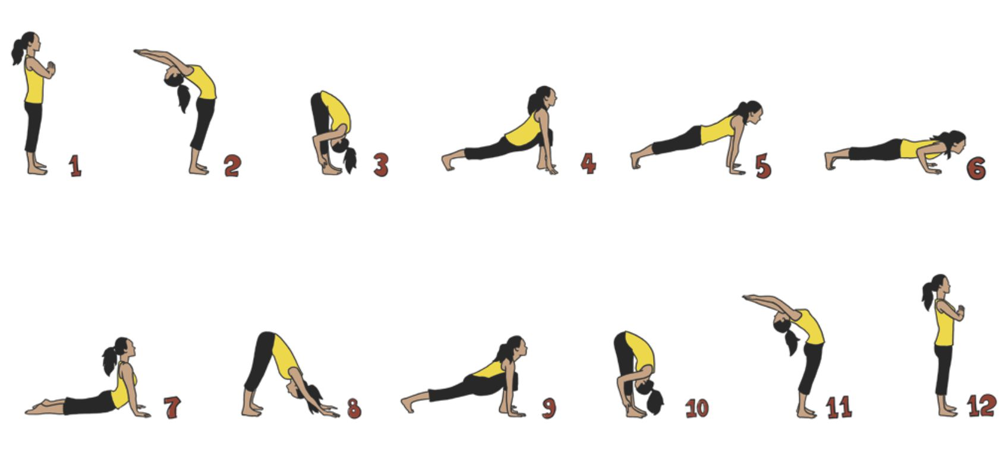
1 – Ficar em pé, na borda estreita do tapete, com os pés juntos e o peso igualmente distribuído sobre eles (sem tombar para um lado ou outro), na postura da montanha, o tadasana.
Respirar profundamente e juntando as mãos em frente ao peito, em posição de anjali mudra.
2 – Inspirar e elevar os braços, alinhando-os às orelhas, e inclinar um pouco o corpo para trás, inclinando a pélvis um pouco para a frente, na postura urdhva hastasana.
3 – Ao expirar, levar os braços para a frente e inclinar o corpo até o seu limite, devagar, mantendo a coluna ereta. Pode-se flexionar os joelhos o quanto necessário para, ao terminar de expirar, posicionar as palmas da mão ao lado dos pés, entrando em uttanasana.
4 – Ao inspirar, esticar a perna direita para trás o máximo possível, olhando para frente, na postura do corredor, o ashwa sanchalanasana.
EDUCAÇÃO FÍSICA 56
5 – Ao inspirar novamente, esticar a perna esquerda para trás deixando o corpo reto, na postura da prancha, a kumbhakasana.
6 – Lentamente abaixar um pouco o corpo, aproximando o peito do chão, mas sem tocar o solo, sustentando o peso sobre as palmas da mão, em chaturanga dandasana.
7 – Deslizar o peito para a frente e levantá-lo, olhando para cima. As pernas não tocam o solo, os cotovelos ficam levemente dobrados para não forçar a articulação dos punhos, na postura do cachorro olhando para cima, o urdhva mukha svanasana.
8 – Elevar o quadril enquanto as palmas das mãos continuam no solo, ficando em posição de um V invertido, na postura do cachorro olhando para baixo, o adho mukha svanasana.
9 – Olhar para frente e, inspirando, levar o joelho direito para frente, enquanto a perna esquerda fica esticada para trás, novamente na postura do corredor, o ashwa sanchalanasana.
10 – Expirando, aproximar o joelho da frente do corpo e repetir a postura do passo 3, o uttanasana
11 – Inspirando, repetir a postura do passo 2, urdhva hastasana, com o corpo arqueado para trás.
12 – Abaixar os braços e unir as palmas das mãos em frente ao peito, em anjali mudra.
EDUCAÇÃO FÍSICA 57
Corpo em ação
Ginástica de condicionamento físico
É a ginástica indicada para manter uma boa forma física e desempenho adequado das funções orgânicas. Converse com os alunos sobre algumas funções da ginástica na vida das pessoas e solicite que eles anotem no caderno o que considerarem relevante. Você pode citar os benefícios por área, como descrito a seguir.
Saúde: fortalecimento do coração; queima de gorduras; maior resistência; aumento da flexibilidade; fortalecimento dos músculos e ossos.
Alívio do estresse: obtido pelas práticas corporais que trazem bem-estar e são prazerosas, como as caminhadas; alongamentos; relaxamentos; práticas em grupo que promovam a socialização; danças; esportes (sem vistas à competição) e muitas outras.
Lazer: preenchimento do tempo livre com qualidade por meio das práticas corporais.
Qualidade de vida: uma das maneiras de se ter qualidade de vida é por meio de práticas corporais, atreladas a outros fatores como alimentação saudável, moradia, segurança, educação, espiritualidade, etc.
Caminhada
A caminhada é uma prática corporal que pode ser realizada por pessoas das mais variadas idades, pois é uma movimentação corporal que não requer muita habilidade, condicionamento físico e sequer materiais, apenas roupas adequadas e calçados que evitem lesões.
Ela tanto pode ser realizada ao ar livre como na esteira, o importante é manter o ritmo e a regularidade da prática, sempre beber água e evitar praticá-la em jejum. Seus benefícios são garantidos quando se alia a caminhada a uma rotina saudável de maneira geral, assegurando horas suficientes de sono, procurando evitar situações de estresse, sempre que possível, e mantendo alimentação leve, saudável e equilibrada.
Entre os benefícios que a caminhada traz para a saúde, estão a diminuição dos sintomas de ansiedade e estresse, o fortalecimento da musculatura, a melhora da postura corporal e da circulação, e ainda outros que você pode conferir no fôlder a seguir.
EDUCAÇÃO FÍSICA 58
Groupon Brasil/Everybodywalk.org/Pixabay
EDUCAÇÃO FÍSICA 59
Organizando a atividade
Materiais necessários: garrafas com água.
Número de aulas estimado: 3
Objetivo: construir, coletivamente, procedimentos e normas de convívio que viabilizem a participação de todos, dentro e fora do ambiente escolar, na prática de caminhada, com o objetivo de promover a saúde e conscientizar da importância das práticas corporais regulares.
- Converse com os alunos sobre a caminhada e seus benefícios, podendo utilizar o cartaz anterior e solicitando a presença do professor de Ciências para explicar cientificamente como ocorre cada um dos benefícios.
- Realize com os alunos uma caminhada na escola ou nos arredores, chamando a atenção para o ritmo, respiração, postura, uso de roupas adequadas e garrafas com água.
Em outro momento, organize com os alunos e a escola uma campanha sobre a importância das práticas corporais na vida das pessoas, com uma caminhada no bairro e entrega do material de divulgação para a população local.
Para isso, é necessário a produção de materiais publicitários, como banner, fôlderes, folhetos, cartazes, etc. Solicite o auxílio do professor de Língua Portuguesa.
Escolha, juntamente com os alunos, o nome da campanha e decidam o percurso da caminhada. Depois, converse com a diretoria para verificar a melhor data para que ocorra o evento, quem poderá participar e verificar também a possibilidade de acompanhamento da Guarda Municipal, guardas de trânsito, professores, profissionais da área da saúde, pais e outras pessoas que possam auxiliar no dia do evento. É necessário também ter como suporte: kit de primeiros socorros, frutas diversas, água para consumo, entre outros.
Andre Borges/Agência Brasília
Alunos fazendo caminhada. Brasília, DF, 2017.
EDUCAÇÃO FÍSICA 60
Andre Borges/Agência Brasília
Alunos fazendo caminhada. Brasília, DF, 2017.
Decidido a data, o percurso e o nome do evento, façam os materiais de divulgação.
Produzam fôlderes com textos verbais e ilustrações para conscientização da importância das práticas corporais. Esse material pode ser elaborado em programa de computador e reproduzido para distribuir às pessoas. Façam uma estimativa da quantidade que deverá ser reproduzida. Lembre-se que é necessário constar nesses materiais a importância do uso de roupas adequadas, protetor solar, bonés e água.
Para o dia do evento, pode se usar bandeirinhas e balões coloridos para decorar o local de encontro das pessoas que irão participar da caminhada. Não se esqueça de fotografar e/ou filmar o evento.
Numa próxima aula, reúna os alunos para conversarem sobre o evento, visualizarem as fotografias e/ou vídeos e levantarem os pontos negativos e positivos da atividade. Deixe que eles falem sobre suas impressões e opiniões.
Avaliando
A avaliação se dará durante todo o processo. Observe a participação e o interesse de cada aluno nas atividades propostas. Realize rodas de conversas para saber a opinião deles quanto à sua participação e a dos colegas nas atividades.
Avalie se os alunos vivenciaram as práticas de ioga, identificando as capacidades físicas presentes nelas, e se realizaram a caminhada com motivação e responsabilidade.
Quanto à campanha, avalie se organizaram a caminhada para a comunidade local com responsabilidade, determinação e protagonismo, se houve envolvimento dos alunos com opiniões, participação na produção dos materiais de divulgação e colaboração no dia do evento.
EDUCAÇÃO FÍSICA 61
Iniciando a busca
Ao trabalhar com essa unidade temática, espera-se que os alunos consigam:
- (EF67EF11) Experimentar, fruir e recriar danças urbanas, identificando seus elementos constitutivos (ritmo, espaço, gestos).
- (EF67EF12) Planejar e utilizar estratégias para aprender elementos constitutivos das danças urbanas.
- (EF67EF13) Diferenciar as danças urbanas das demais manifestações da dança, valorizando e respeitando os sentidos e significados atribuídos a eles por diferentes grupos sociais.
- Competências específicas: 7, 8, 10
- Competências gerais: 4, 9, 10
- Competências de linguagem: 1, 3, 5
A dança é a arte mais antiga que se conhece e que vem acompanhando a humanidade até os dias de hoje, nas mais diversas sociedades. Nos primórdios, dançava-se para pedir aos deuses: boa caça, chuva, sucesso nas guerras e fartas colheitas. Normalmente eram dançadas em grupos e em círculo. Algumas sociedades tribais ainda realizam as danças com essas intenções. Com o passar do tempo, muitas danças foram surgindo com a finalidade de diversão, como as florais (dança da deusa das flores) e bacanais (dança em homenagem ao deus Baco, o deus do vinho e da alegria). Na Idade Média, com o cristianismo e a negação do corpo, muitas danças foram proibidas, sendo consideradas profanas e apenas as manifestações religiosas eram permitidas. Mesmo assim, a dança continuou sendo realizada. Com o Renascimento, a dança apareceu em papel de destaque nas camadas dominantes, ensinadas pelos mestres de baile. Com o passar dos séculos, muitas danças foram sendo produzidas e, nos dias atuais, podemos observar várias delas sendo realizadas por diferentes grupos sociais.
Questione os alunos sobre os tipos de danças que eles conhecem, quais já viram ou praticam, de quais mais e menos gostam. Relacione, por escrito, as danças conforme eles forem falando e, depois, as classifique em: danças de salão (como bolero, samba, tango, valsa, xote, vaneira, marchinha); danças folclóricas nacionais e internacionais (como a catira, fandango, carimbó, ciranda, coco, frevo, tarantela, salsa, flamenco, samba de roda, maculelê, toré, kuarup), danças teatrais (balé clássico, dança moderna, dança contemporânea, por exemplo); danças urbanas (funk, break, country, entre outras), completando com as danças que não forem citadas.
EDUCAÇÃO FÍSICA 62
As danças urbanas estão vinculadas a grupos sociais presentes nos grandes centros urbanos, formando as chamadas tribos urbanas. Investigue o que os alunos sabem sobre tribos urbanas e, se for necessário, traga informações complementares.
As tribos urbanas, também chamadas de “subculturas” ou “subsociedades”, são grupos formados nas cidades, principalmente nas metrópoles. A expressão “tribo urbana” foi criada pelo sociólogo francês Michel Maffesoli, em 1985. Esses grupos são formados por jovens que querem definir uma identidade. Possuem uma organização interna, com hábitos, danças, músicas, filosofia, vocabulário, vestes e preferências próprias que os caracterizam. São várias as tribos urbanas que existem atualmente: country, clubbers, hip-hop, funkeiros, skatistas, hippies, patricinhas e mauricinhos, punks, metaleiros, góticos, emos, rastafaris, cosplayers, nerds, drag queens.
Paulo H. Guereta/wikimedia.commons
Cosplayers, Comic Con. São Paulo, SP, 2015.
Estevan Cruz/Flickr
Estilo hip-hop. São Paulo, SP, 2021
As tribos urbanas não são estanques, assim como tudo está em constante transformação, o mesmo acontece com os grupos: muitos acabam, outros se modificam e muitos novos surgem de acordo com as características de cada tempo e espaço social.
Sugestão de Leitura
Tribos urbanas: produção artística e identidades
Leila Maria da Silva Blass e José Machado Pais.
Este livro é um resultado de uma reflexão conjunta de sociólogos e antropólogos sobre a problemática das tribos urbanas, sua produção artística e identidades. Editora Annablume, 2004.
Danças urbanas: uma história a ser narrada
Rose Mary Marques Papolo Colombero.
A investigação da manifestação danças urbanas por meio de depoimentos de seus praticantes, que relacionam memória e identidade partindo do tempo presente dos entrevistados, mostrando assim o processo de construção dos acontecimentos, constatação dos fatos e constituição de discursos.
Disponível em: http://www.gpef.fe.usp.br/teses/agenda_2011_09.pdf. Acessos em: 6 maio 2022.
EDUCAÇÃO FÍSICA 63
Investigue se eles percebem novas tribos urbanas surgindo. Cite algumas características de alguns grupos e desafie-os a darem um nome para eles, com os exemplos a seguir.
Grupo 1 – sempre estão em boa forma física, treinam em academias, têm alimentação balanceada, fazem uso de suplementos alimentares, usam roupas justas e costumam ouvir músicas eletrônicas.
Grupo 2 – usam frequentemente computadores, celulares e tablets, estão sempre conectados à internet, conhecem as novidades tecnológicas e preferem socializar virtualmente
Em seguida, organize a turma em pequenos grupos e solicite que cada um pesquise uma dança urbana, buscando as principais características da dança e a que tribo urbana pertence. Eles deverão apresentar os resultados aos colegas e, se necessário, complemente com imagens e textos das danças urbanas e suas respectivas tribos. Segue algumas informações:
Dança country: surgida nos Estados Unidos pela influência de imigrantes ingleses, esse tipo de dança está presente na tribo urbana country. Essa tribo identifica-se pelas roupas de cowboy ou cowgirl, consistindo em jeans, camisa, bota de couro e chapéu, músicas e danças country e sertanejas. A dança tem passos fortes e bem marcados, com pequenas coreografias, e pode ser executada individualmente ou por casais. Há pouco movimento dos quadris e da parte superior do corpo, apresentando fortes batidas de calcanhar no chão. É bastante frequente na região Centro-Oeste do Brasil.
Dança eletrônica/tecno: esse tipo de dança está presente na tribo urbana clubbers, entre outras. Com a evolução da tecnologia, surgiram as músicas criadas em laboratórios som, utilizando-se equipamentos eletrônicos e não instrumentos musicais. São diversos os estilos de música eletrônica, tendo como exemplos o tecno, o trance, o psy e o chill out. Alguns viram hits comerciais e são tocados com frequência em rádios e academias, enquanto outros têm caráter mais underground, sem a presença de vocais e com batidas mais graves. As pessoas que se identificam com essas tribos apreciam as festas rave, cabelos e roupas coloridas.
EDUCAÇÃO FÍSICA 64
Breakdance: esse tipo de dança é executada com passos acrobáticos, saltos, giros e inversões. Exige preparo muscular e flexibilidade, além de estilo e atitude do dançarino. Existem diversas competições de breaking ao redor do mundo, tanto oficiais como realizadas informalmente nas ruas, as chamadas batalhas de break. Essa dança faz parte do movimento hip-hop. Fazem parte dessa cultura o disc-jockey (DJ); a música rap, o mestre de cerimônias (MC); o grafitti ou grafite, a arte de pintar muros e paredes com sprays ou tinta. As roupas são largas para facilitar e dar efeito aos movimentos corporais da dança e usam bonés.
Dança funk: esse tipo de dança está presente na tribo urbana “funkeiros”. No Brasil, há uma predominância do estilo funk carioca, realizado nas festas (bailes funks) das comunidades (favelas) do Rio de Janeiro e São Paulo. Esse movimento é muito criticado por, muitas vezes, fazer apologia ao uso e tráfico de drogas e por apresentar linguagem obscena e vulgar. Tais aspectos podem ser identificados como consequência de uma sociedade marcada por exclusão e violência.
Depois das apresentações da pesquisa, em uma roda de conversa, aborde a importância do respeito para com esses movimentos, pois, independente do grupo ou manifestação a qual pertença a dança, todos têm o seu valor e a sua intencionalidade, já que a dança expressa sentimentos, emoções e retrata a realidade por meio da linguagem corporal.
Corpo em Ação
Danças urbanas
Investigue com os alunos se alguns deles sabem dançar country, eletrônica/tecno, breakdance ou funk para ensinar aos colegas. Solicite que todos vivenciem as danças, identificando seus elementos constitutivos (ritmo, espaço e gestos). Se houver possibilidade, convide algum grupo ou membro de algum grupo que realiza uma dança urbana para
EDUCAÇÃO FÍSICA 65
demonstrá-la e ensiná-la aos alunos. Outra possibilidade para a vivência prática das danças urbanas é apresentar aos alunos vídeos que mostrem algumas dessas danças.
Organizando a atividade
Materiais necessários: aparelho de som e músicas com os ritmos das danças urbanas.
Número de aulas estimado: 4
Objetivo: experimentar e fruir danças urbanas, identificando seus elementos constitutivos (ritmo, espaço, gestos).
Dança country
Projete vídeos com passos da dança country. Sugestões:
- Aprenda a dançar country com 5 movimentos - Prof. Warlei Oliveira: https://www.youtube.com/watch?v=50J-skSAohU
- Apresentação de Dança Country/Sertaneja (Comitiva Te Pego no Laço - AM): https://www.youtube.com/watch?v=3QLzmV1PZz8
S.I./Secretaria de Estado da Educação do Paraná
Alunos dançando country. Curitiba, PR, 2015.
Realize alguns movimentos ou solicite que os alunos que sabem dançar este ritmo mostrem alguns passos, para que os colegas reproduzam.
Escolha uma música country e elabore junto com os alunos uma composição coreográfica com os passos vivenciados, cuidando com o ritmo, a exploração do espaço e formas.
Dança eletrônica/tecno
A exemplo do country, solicite que os alunos que sabem dançar este ritmo mostrem alguns passos para os colegas, e também projete vídeos com passos de dança eletrônica ou demonstre alguns passos. Sugestões de vídeos:
EDUCAÇÃO FÍSICA 66
- Como dançar música eletrônica | 4 Passos de Psy Rebolation: https://www.youtube.com/watch?v=r_EFeRL1X4o
- Aprenda a dançar Sarro / Como dançar música eletrônica - Passos Básicos https://www.youtube.com/watch?v=BbC6oY8cmsc
Sérgio Bonfim dos Santos
Agora é a vez dos alunos experimentarem este estilo de dança. Use músicas eletrônicas.
Breakdance
Apresente aos alunos uma imagem com movimentos da dança breakdance. Solicite que identifiquem os nomes dos gestos (passos) característicos deste estilo de dança, os alunos podem realizar pesquisas ou pedir ajuda aos colegas que dominam o breakdance.
Everson Bressan/SMCS
Alunos dançando breakdance. Curitiba, PR, 2015.
Sugestão de Vídeos
Como dançar hip-hop
Disponível em: https://www.youtube.com/watch?v=cqpO50mVkbk
Como dançar breaking
Disponível em: https://www.youtube.com/watch?v=BonajVkVaEA&ab_channel=BrownAndrade
EDUCAÇÃO FÍSICA 67
Sugestão de Vídeos
Aprenda dançar funk | 3 passos básicos
Disponível em: https://www.youtube.com/watch?v=gN3FoRB0P7A Acesso em: 17 maio 2022.
Projete vídeos com a dança breakdance, solicite que quem souber realizar a dança mostre aos colegas e, logo após, estimule os alunos a vivenciarem alguns passos da dança. Use espaço adequado com tatames e converse com os alunos sobre os cuidados ao realizarem os passos para não se machucarem e nem atingirem os colegas.
Dança funk
Esse estilo de dança é bem polêmico e, por isso, deve ser tratado na escola como conhecimento da cultura corporal a ser debatido, e não negado. Para fomentar as discussões, apresente o texto a seguir aos alunos.
O surgimento do funk carioca:
relações e aproximações entre funk e hip hop
O funk tem a pluralidade como uma de suas características mais importantes. Desde a sua origem, o gênero traz em suas entranhas a junção de diversos elementos advindos de diferentes culturas, como o hip hop e a funk music dos Estados Unidos e, até mesmo, o axé da Bahia. Tudo isso põe em evidência as influências provenientes do que é chamado por alguns pesquisadores de diáspora africana
Na verdade, a história do funk no Brasil confunde-se com a história do hip hop no país. De certo modo, podemos afirmar que os dois gêneros musicais possuem origens muito semelhantes e o desenvolvimento de ambos foi propiciado pela chegada da música black dos Estados Unidos no Brasil, por volta dos anos 1960, tanto em São Paulo como no Rio de Janeiro. Nessa época, aconteciam bailes black, que tocavam especificamente o hip hop americano.
O cientista social Juarez Dayrell (2002) escreve que o funk e o hip hop são muito importantes para a socialização da juventude das periferias. O autor traça um paralelo entre o mundo do trabalho, que fecha a porta para esses jovens, enquanto o funk e o hip hop dão oportunidades para que eles se afirmem enquanto sujeitos, de modo que esses gêneros musicais, embora distintos em termos musicais, representam a oportunidade dessa juventude elaborar suas próprias vivências.
Embora apresentem origens semelhantes, como foi afirmado, o funk, o hip hop e o rap no Brasil viriam a diferenciar-se uns dos outros, conforme o passar dos anos, as modificações e imbricações sofridas por esses estilos musicais estrangeiros os associaram cada vez mais aos ritmos nacionais. Nesse sentido, o rap, filho do hip hop no Brasil, possuía um discurso de afirmação racial, contestação social e enfrentamento político, enquanto
EDUCAÇÃO FÍSICA 68
o nascente funk filiava-se mais ao breaking dance, estilo consagrado dos b-boys norte-americanos (FIDELES et al, 2014).
Outro elemento que fornece uma diferenciação entre os dois filhos do hip hop no Brasil, o funk e o rap, é que este último, de forma paulatina, abandonou a perspectiva da festa que compreendia o universo do hip hop e passou a enveredar pelo caminho da crítica social que o distanciava completamente dessa origem festiva. Entretanto, se o rap, com o passar dos anos viria a distanciar-se cada vez mais da ideia de festa, o funk, sobretudo o carioca, associar-se-ia ainda mais a ela. O funk, como já foi afirmado, é um gênero musical diverso, assim como é o povo que o produz. Dessa forma, este capítulo realiza uma análise do contexto sociohistórica e cultural que culminou no surgimento do que conhecemos atualmente como funk carioca.
[...]
Antes de entrar propriamente na história de como esse gênero musical floresceu no Brasil, na segunda metade do século XX, é importante ressaltar diversos pesquisadores (HERSCHMANN, 2005; VIANNA, 1988; LOPES, 2011; MIZHARI, 2010) do funk, sobretudo no que tange às letras e aos comportamentos relacionados a esse gênero, e o que pontuam em suas obras. Merece destaque a relação funk – preconceito – racismo e violência, ou , em outras palavras, a associação entre palavras funkeiro = pivete, em que a primeira passa a substituir a segunda no imaginário social carioca, sobretudo pelo modo como este era tratado na mídia, não só carioca, mas nacional nos anos 1990 e 2000. Nesse sentido, Paul Gilroy destaca que é de fundamental importância atentarmos para as produções musicais e seus simbolismos, especialmente quando estes são desenvolvidos por populações negras.
ARNOLDT, Jason Patrick. Transformações no funk carioca (1980-2017): cenário sócio-histórico e cultural, hibridismos e principais personagens. 2019. Dissertação (Mestrado em Música). Universidade Federal de Goiânia, Goiânia, 2019. Disponível em: https://repositorio.bc.ufg.br/tede/bitstream/tede/10045/5/ Disserta%C3%A7%C3%A3o%20-%20Jason%20Patrick%20Arnoldt%20-%202019.pdf. Acesso em: 9 maio 2022.Partindo da leitura do texto com os alunos, promova discussões e posicionamentos por meio de alguns pontos que podem ser levantados, por exemplo: letras das músicas quando se originou e como são atualmente; passos da dança praticados nos grandes bailes funk e na era atual, com apelação sexual; intencionalidade do funk quando foi criado e atualmente; vestimentas usadas nos bailes funk.
Após esta conversa, convide os alunos para experimentarem alguns passos de funk onde não precisam realizar passos apelativos. Escolham músicas que tragam temas sociais e não eróticos.
EDUCAÇÃO FÍSICA 69
Dança de rua x dança clássica
A dança de rua, para muito de seus praticantes, significa muito mais que apenas uma modalidade de dança, tratando-se de um estilo de vida. Ela surgiu durante a grande crise econômica de 1929, nas metrópoles norte-americanas, quando os músicos e dançarinos que trabalhavam nos cabarés ficaram desempregados e começaram a fazer seus shows nas ruas.
Para relembrar os alunos sobre o que foi estudado no 6.º ano, prepare com antecedência pequenos textos sobre os estilos de dança que fazem parte das danças de rua, organize a turma em grupos e entregue um texto para cada um. Eles deverão fazer a leitura e, posteriormente, apresentar as informações para os colegas. Você poderá ampliar as apresentações com imagens e vídeos de cada estilo musical, que poderão ser encontrados no site https://www.dancaderua.com/ (acesso em: 10 maio 2022).
Organizando a atividade
Materiais necessários: : projetor ou televisor para exibição de filme.
Número de aulas estimado: 3
Objetivo: diferenciar as danças urbanas das demais manifestações da dança, valorizando e respeitando os sentidos e significados atribuídos a elas por diferentes grupos sociais
Inicie informando aos alunos que irão assistir ao filme “Vem dançar”. Mostre a capa e questione-os sobre a dança representada nela antes de transmitir o filme.
Divulgação/New Line CinemaVem dançar
Ano: 2006.
Produção: New Line Cinema.
Pierre Dulaine (Antonio Banderas) é um dançarino de salão profissional que se torna voluntário para dar aulas de dança em uma escola pública de Nova Iorque. Pierre tenta apresentar seus métodos clássicos, mas logo enfrenta resistência dos alunos, mais interessados em hip- -hop e desse confronto nasce um novo estilo de dança, mesclando os dois lados e tendo Pierre como mentor.
EDUCAÇÃO FÍSICA 70
Após a exposição do filme, em uma roda de conversa, pergunte aos alunos:
- Quais são os dois tipos de danças que aparecem no filme?
- Houve discriminação dos estilos de dança? Explique.
- Quais são os motivos de resistência ao estilo de dança?
- Em que contexto histórico foram produzidos os dois tipos de danças que aparecem no filme?
- Você acredita ser viável a união dos ritmos em uma só coreografia? Explique
Forme grupos para a realização de uma pesquisa sobre o tango e o break. Cada grupo ficará responsável por um tipo de dança. Essa pesquisa deve conter a origem, o contexto atual e os tipos de movimentos corporais das danças. Os grupos poderão fazer cartazes ou apresentar o trabalho com recursos digitais.
Seguem sugestões de links para subsídio ao trabalho: http://www.arte.seed.pr.gov.br/modules/conteudo/conteudo.php?conteudo=112; http://www.zonasuburbana.com.br/hip-hop-sua-origem-a-historia-da-cultura/. Acesso em: 17 maio 2022.
Possibilite um momento para a apresentação das pesquisas. Você poderá ampliar as apresentações com imagens e vídeos de cada estilo musical.
Depois que os alunos explorarem os estilos, permita que vivenciem cada um deles, para que os compreendam pela linguagem corporal. Aproveite sempre o conhecimento dos alunos, investigando se algum deles é adepto ao movimento hip-hop e se sabem dançar break para ensinar aos colegas.
Avaliando
Partindo da observação direta, avalie se os alunos participaram das aulas de dança, experimentando com entusiasmo os ritmos abordados e se houve a preocupação em não descaracterizar os gestos de cada estilo. Avalie se os alunos que dominavam os passos contribuíram com os colegas, demonstrando e auxiliando-os. verifique se eles debateram com respeito as questões levantadas sobre a dança funk.
Quanto ao filme projetado, avalie, por meio dos diálogos e das conclusões tiradas, se os alunos perceberam a importância de cada estilo de dança e do grupo a que pertencem, e que movimentos corporais podem ser adaptados a qualquer estilo musical. Observe também, se os alunos participaram das vivências práticas de dança com entusiasmo e disponibilidade.
EDUCAÇÃO FÍSICA 71
Iniciando a busca
Ao trabalhar com essa unidade temática, espera-se que os alunos desenvolvam as seguintes habilidades e competências:
- (EF67EF14) Experimentar, fruir e recriar diferentes lutas do Brasil, valorizando a própria segurança e integridade física, bem como as dos demais.
- (EF67EF15) Planejar e utilizar estratégias básicas das lutas do Brasil, respeitando o colega como oponente.
- (EF67EF16) Identificar as características (códigos, rituais, elementos técnico-táticos, indumentária, materiais, instalações, instituições) das lutas do Brasil.
- (EF67EF17) Problematizar preconceitos e estereótipos relacionados ao universo das lutas e demais práticas corporais, propondo alternativas para superá-los, com base na solidariedade, na justiça, na equidade e no respeito.
- Competências específicas: 1, 2, 4, 6, 7, 8, 9, 10
- Competências gerais: 1, 3, 4, 9
- Competências de linguagem: 1, 2, 3, 5
As lutas são práticas corporais produzidas nas relações entre as pessoas. Já foram usadas para sobrevivência, defesa ou ataque aos inimigos, com o passar dos tempos as intenções foram sendo modificadas e, atualmente, são praticadas como esportes, artes marciais, filosofia de vida. Infelizmente, muitos movimentos corporais das lutas são usados em brigas, cuja intenção é agredir com violência.
Nas aulas de Educação Física, as lutas são abordadas como disputas corporais. Os alunos devem aprender “técnicas, táticas e estratégias específicas para imobilizar, desequilibrar, atingir ou excluir o oponente de um determinado espaço, combinando ações de ataque e defesa dirigidas ao corpo do adversário” (BRASIL, 2017, p. 218).
Qualquer que seja a modalidade de luta trabalhada, é importante abordá-la de maneira reflexiva, com conhecimentos históricos e contextuais, de modo que não se trate apenas de capacidades e potencialidades físicas, reforçando o respeito às regras e à disciplina necessária para a prática. Como não se trata de ensinar a brigar, desenvolver a prática de uma luta acaba por valorizar a preservação da saúde física e mental dos lutadores.
EDUCAÇÃO FÍSICA 72
No Brasil há muitos estilos de luta sendo praticados. Entre os produzidos aqui, podemos citar as lutas huka-huka, marajoara, capoeira e jiu-jítsu brasileiro, sendo as duas últimas abordadas neste manual.
Corpo em ação
Lutas do Brasil
Capoeira
A capoeira é uma manifestação cultural afro-brasileira muito praticada no Brasil. Ela pode ser observada nas ruas e praças, nas academias, nas escolas. As rodas de capoeira são consideradas como Patrimônio Imaterial da Humanidade desde 2014. É considerada como luta, dança, jogo e esporte.
Pergunte aos alunos o que eles sabem sobre a capoeira: sua origem, os instrumentos musicais utilizados, as músicas, os movimentos corporais. Relembre-os que a capoeira é uma manifestação histórica e cultural de matriz afro-brasileira, estabelecida como patrimônio da humanidade.
Sugestão de Leitura
Roda de capoeira
O texto discorre sobre o reconhecimento da capoeira como Patrimônio Imaterial da Humanidade, pela Unesco. No fim da página, e seção Leia mais, apresenta outros conteúdos que podem ser repassados aos alunos. Disponível em: https://cutt.ly/kHND8nW. Acesso em: 26 abr. 2022.
Acervo/Arquivo Nacional do Brasil
RUGENDAS, Johann Moritz. Jogar Capoeira, 1835. Litografia.S.I./Prefeitura de Santo Amaro
Roda de capoeira. Santo Amaro, BA, 2016.Organizando a atividade
Materiais necessários: aparelho de som, músicas com ritmos de capoeira.
Número de aulas estimado: 2
Objetivo: usufruir da prática corporal de luta capoeira, com autonomia diferenciando-a como prática de lazer e prática competitiva (campeonatos esportivos).
EDUCAÇÃO FÍSICA 73
Prepare a turma para a vivência dos movimentos de capoeira. Investigue, na turma, se há algum aluno que pratique esse esporte, aproveite esse conhecimento ou convide um grupo de capoeira para conversar e demonstrar. Se não for possível convidar um grupo, solicite uma pesquisa em livros e sites que tragam os principais movimentos, as músicas, os instrumentos, indumentária, etc.
Organize os alunos em círculo, para vivenciarem a roda de capoeira, chamando a atenção deles para as técnicas necessárias para realizarem os movimentos, bem como para os rituais próprios desta luta. Caso tenha alguma dúvida, consulte o Manual de Educação Física do 6.º ano.
Fale sobre os cuidados que devem ter ao realizar os movimentos para não se machucarem e não cometerem nenhum acidente com os colegas.
As performances dos competidores são avaliadas por 5 juízes. Os juízes irão pontuar os competidores conforme os critérios a seguir.
| 1.° e 2.° juiz |
| De 0 a 3 pontos máximos a cada competidor no fim da rodada pelos seguintes itens: |
| Jogo e ritmo: |
|
| Técnica |
|
| Físico e ética do concorrente |
|
EDUCAÇÃO FÍSICA 74
| 3.° juiz | ||||||||||
1 ponto para cada pontapé listado abaixo e cada movimento acrobático que se tornou um pontapé subsequentemente: Golpes de linha com diferentes entradas ou variações
Critérios:
|
||||||||||
| 4.° juiz | ||||||||||
|
1 (um) ponto por cada movimento acrobático
Critérios:
|
||||||||||
| 5.° juiz | ||||||||||
|
4 (quatro) pontos para cada golpe:
2 pontos para cada final incompleto (um competidor agarra seu oponente, mas não pode derrubá-lo). 2 pontos para cada fuga bem-sucedida ou desarme da espera. 2 pontos para cada salto ou passagem sobre o adversário. 2 pontos ao adversário do concorrente após cada terceiro aviso. |
||||||||||
| Físico e ética do concorrente | ||||||||||
|
EDUCAÇÃO FÍSICA 75
Proponha aos alunos a organização de um pequeno torneio de capoeira, no qual alguns serão os atletas, outros serão os árbitros (juízes) e outros, os organizadores. Não se esqueçam de elaborar o regulamento e a tabela de pontuação com a função de cada árbitro tendo como base o quadro mostrado anteriormente. Combine juntamente com os alunos e coordenadores um dia para a realização do torneio de capoeira na escola. Siga a organização do quadro anterior.
Depois, numa roda de conversa, investigue se os alunos compreenderam a diferença da capoeira realizada enquanto prática de lazer e a capoeira enquanto esporte; qual delas acham mais interessante; qual é a opinião deles em tornar a capoeira um esporte olímpico e outras questões que achar relevantes.
Jiu-jítsu brasileiro
O jiu-jítsu brasileiro é uma luta que visa a alavancagem e o desequilíbrio dos adversários, usando a força dos oponentes contra eles próprios, apresentando movimentos e técnicas de imobilização vigorosas no chão.
Confira, no texto a seguir, um pouco mais sobre essa luta.
O jiu-jítsu brasileiro
O jiu-jítsu brasileiro é um dos desportos mais proveitosos e espetaculares para todos os entusiastas das lutas marciais. Conheça um pouco mais acerca do jiu-jítsu brasileiro e da sua história e saiba porque é que esta modalidade é considerada uma das artes marciais imbatíveis.
O que é o jiu-jítsu brasileiro?O jiu-jítsu brasileiro é um estilo de Jujutsu ou Ju-Jitsu japonês que foi desenvolvido no Brasil pela família Gracie. Trata-se de uma arte marcial que reflete um desporto de combate e revela um sistema de defesa pessoal próprio que se concentra no imobilizar da ação do adversário.
A prática do jiu-jítsu brasileiro permite o domínio do adversário, independentemente do seu tamanho, mediante a aplicação de técnicas específicas que o forçam à submissão. Este é um desporto que ensina uma pessoa frágil a defender-se de adversários mais fortes e uma das suas vantagens principais concentra-se na luta corporal que é realizada no chão e no desarmar dos pontos fortes dos oponentes.
O jiu-jítsu brasileiro pode ser classificado como uma ciência exata dos movimentos coordenados de defesa pessoal, que utiliza alavancas e bloqueios de respiração sem magoar o seu agressor, mas que o forçam a desistir dos seus intentos.
A aplicação prática do jiu-jítsu brasileiroO jiu-jítsu brasileiro é um desporto marcial que pode ser trabalhado e utilizado em várias perspectivas diferentes.
EDUCAÇÃO FÍSICA 76
- Torneios de Grappling: uma técnica de imobilização pelo meio da qual existe um domínio do oponente. Trata-se de uma forma de combate muito utilizada na formação dos polícias e nos desportos de competição como o wrestling. Nestes torneios, os praticantes exibem as suas habilidades técnicas, físicas e psicológicas com o objetivo de neutralizar, imobilizar ou torcer as articulações dos adversários, levando-os à desistência.
- Torneios de mistura de artes marciais (MMA): estes são os torneios que mais têm vindo a crescer no segmento das artes marciais e são muito populares em todo o mundo. É frequente encontrar neste tipo de torneios todo o tipo de lutadores e o jiu-jítsu brasileiro é um dos estilos mais utilizados e apreciados. O vale tudo é um desporto que reúne vários destes estilos e técnicas e também está presente neste tipo de competição.
- Defesa pessoal: é o modelo seguido pela maioria dos praticantes e não tem qualquer tipo de objetivo competitivo. Todos os praticantes recorrem à flexibilidade do seu corpo, de modo a evitar os golpes dos seus adversários e utilizam a sua força de forma inteligente com o auxílio das técnicas mais adequadas. Estes são os princípios básicos do jiu-jítsu brasileiro.
A história do jiu-jítsu brasileiro remonta ao século XIX e está diretamente relacionada com o aparecimento da Escola de Judo Kodokan (1882), quando Jigoro Kano desenvolveu um método desportivo que reunia as técnicas menos perigosas do jiu-jítsu, onde privilegiava um domínio da luta tanto em pé como no solo.
Mitsuyo Maeda foi um dos grandes mestres de Jujutsu e de Judo na escola de Kodokan e teve como missão principal dar a conhecer a arte deste desporto a todo o mundo. O mestre Maeda deixou o Japão no ano de 1904 para visitar inúmeros países e realizar várias demonstrações e combates com wrestlers, boxers, lutadores de Savate, entre outros. O novo estilo de luta conseguiu surpreender os mais céticos e começou, desde logo, a ganhar simpatizantes em todos os cantos do mundo.
superwebdeveloper/Lutas e Artes Marciais
Lutas e Artes Marciais.
Em 1914, Mitsuyo Maeda chega ao Brasil e foi auxiliado e recebido por Gastão Gracie. Para agradecer a hospitalidade de Gastão, o mestre de judô ensinou a Carlos Gracie (filho de Gastão) a nova arte marcial do jiu-jítsu. Em meados do século 20, Carlos Gracie transmitiu os seus conhecimentos marciais aos irmãos Osvaldo, Gastão, Jorge e, mais tarde, Hélio Gracie. Ao aprofundar os estudos, os irmãos Gracie desenvolveram o jiu-jítsu brasileiro [...], que é uma variante distinta do original.
O JIU-JÍTSU brasileiro. Lutas e Artes Marciais. Disponível em: https://lutasartesmarciais.com/artigos/jiu-jitsu-brasileiro. Acesso em: 18 maio 2022EDUCAÇÃO FÍSICA 77
Sugestão de Leitura
Golpes de jiu-jítsu - nomes, descrições e exemplos
Disponível em:https://www.muitomaisacaojiujitsu.com.br/2014/07/golpes-de-jiu-jitsu-nomes-descricoes-exemplos.html
Aprenda golpes básicos de jiu-jítsu | Projeto Futuro Guerreiro
Disponível em: https://www.youtube.com/watch?v=Vn0n647sBZk&ab_channel=RevistaFor%C3%A7aeFoco
Acessos em: 18 maio 2022
O jiu-jítsu brasileiro acabou distanciando-se da filosofia oriental e tornou-se estritamente competitivo, portanto, para abordá-lo nas aulas de Educação Física, é necessário que os alunos conheçam as origens e a história do jiu-jítsu oriental, explorando seus conceitos e sua filosofia, de modo a resgatar preceitos e ideais, geralmente não ensinados em academias modernas de artes marciais.
Antes de iniciar a vivência prática com os alunos, solicite que eles realizem uma pesquisa sobre:
- como a luta surgiu no Japão;
- como e por quem era praticada antes de chegar ao Brasil;
- quais são os golpes proibidos nas competições de jiu-jítsu;
- como o atleta se consagra vencedor da luta;
- os golpes de jiu-jítsu que aparecem na luta de Mixed Martial Arts (MMA) ou, em português, Artes Marciais Mistas;
- outras questões que considerar relevantes para a realidade da sua escola.
Chomsky2093/wikimedia.commons
Família Gracie reunida.Steven Branscombe/USA TODAY Sports
Vitória por finalização de Joanne Calderwood sobre Kalindra Faria no UFC Fight Night 135 da Pinnacle Bank Arena em Lincoln. Nebraska, EUA, 2018.Organizando a atividade
Materiais necessários: tatames, pisos EVA, computador, projetor ou cartaz impresso.
Número de aulas estimado: 2
Objetivo: experimentar e fruir o jiu-jítsu brasileiro, valorizando a própria segurança e integridade física e a dos colegas, identificando técnicas e táticas próprias da luta.
Projete o cartaz a seguir ou reproduza um para cada aluno.
EDUCAÇÃO FÍSICA 78
Realize uma análise das imagens e descrição dos golpes de jiu-jítsu, observando também as cores das faixas das graduações da luta.
Organize os alunos em duplas em um tablado de tatames. Solicite que experimentem realizar os golpes demonstrados no cartaz, cuidando com os movimentos para não se machucarem.
Demonstre ou projete vídeos com esses e outros golpes de jiu-jítsu e solicite que os alunos os realizem, observando os detalhes das técnicas empregadas em cada movimento.
Avaliando
Observe se os alunos já haviam experimentado antes a prática corporal capoeira ou se tiveram acesso pela primeira vez, e se realizaram os movimentos com entusiasmo e respeito aos colegas. Avalie a participação deles na organização do torneio, conferindo se desempenharam com responsabilidade as tarefas atribuídas, garantindo o sucesso de todos. Verifique a compreensão deles quanto à luta capoeira de lazer e de competição (esporte), analisando as respostas das questões realizadas na roda de conversa final.
Com relação ao jiu-jítsu, avalie, por meio das vivências corporais, se os alunos participaram com responsabilidade e empenho dos golpes, cuidando para não se machucarem e nem provocando acidentes com colegas. Avalie também os resultados da pesquisa solicitada.
EDUCAÇÃO FÍSICA 79
Iniciando a busca
Ao trabalhar com essa unidade temática, espera-se que os alunos desenvolvam as seguintes habilidades e competências:
- (EF67EF18) Experimentar e fruir diferentes práticas corporais de aventura urbanas, valorizando a própria segurança e integridade física, bem como as dos demais.
- (EF67EF19) Identificar os riscos durante a realização de práticas corporais de aventura urbanas e planejar estratégias para sua superação.
- (EF67EF20) Executar práticas corporais de aventura urbanas, respeitando o patrimônio público e utilizando alternativas para a prática segura em diversos espaços.
- (EF67EF21) Identificar a origem das práticas corporais de aventura e as possibilidades de recriá-las, reconhecendo as características (instrumentos, equipamentos de segurança, indumentária, organização) e seus tipos de práticas.
- Competências específicas: 1, 2, 6, 8, 9, 10
- Competências gerais: 1, 6, 7, 9, 10
- Competências de linguagem: 1, 2, 4
De acordo com a BNCC, nesta unidade temática
exploram-se expressões e formas de experimentação corporal centradas nas perícias e proezas provocadas pelas situações de imprevisibilidade que se apresentam quando o praticante interage com um ambiente desafiador. (2017, p. 218).Com base nessa definição, solicite que os alunos escrevam uma frase, relacionada à Educação Física, com a temática “arriscar”. Depois, peça que cada um leia a sua frase. Em uma roda de conversa, troquem ideias sobre os medos que sentem ao se arriscarem em um desafio ou se preferem não arriscar.
Antes de vivenciar algumas práticas, é importante falar sobre a segurança. Arriscar não significa ser negligente. Alguns cuidados devem ser observados ao realizar tais práticas, por exemplo: usar equipamentos de segurança (capacete, cotoveleiras, joelheiras, etc.); respeitar os espaços públicos; não realizar práticas em ruas movimentadas; não “pegar carona”
EDUCAÇÃO FÍSICA 80
atrás de veículos como ônibus e caminhões; respeitar os pedestres; usar roupas adequadas; usar equipamentos seguros e bem revisados; seguir orientações de líderes e guias.
Depois dessa conversa inicial, pergunte se eles conhecem alguma prática de aventura urbana e alguma prática de aventura na natureza. Escreva, no quadro de giz, as práticas corporais de aventura que forem citadas e acrescente mais, se necessário.
| Praticas corporais de aventura na natureza | Práticas corporais de aventura urbana |
| Orientação (corrida) | Parkour |
| Corrida de aventura | Skate |
| Mountain bike | Patins |
| Rapel | Bike |
| Tirolesa | Parede de escalada |
| Arborismo | Paintball |
Faça a relação com a temática arriscar e, se possível, apresente imagens desses esportes. Você pode também transmitir alguns vídeos em que aparecem esportes de aventuras tanto urbano quanto da natureza.
Converse com os alunos a respeito dos ambientes escolares onde são realizadas as práticas de Educação Física. Questione a possibilidade de se vivenciar práticas da cultura corporal de movimento utilizando outros espaços que extrapolem a quadra poliesportiva, em áreas externas da escola, como jardins, escadarias, parques.
Fale sobre os demais ambientes onde normalmente são realizadas práticas corporais de aventura. Estes podem ser naturais, como florestas, matas, cachoeiras e parques, ou urbanos, como ruas, praças, prédios, espaços públicos e privados.
Importante falar sobre respeito que os praticantes devem ter nesses locais, pois eles são compartilhados com outras pessoas e, no caso de ambientes naturais, são também habitat de outros seres vivos, que devem sempre ser respeitados.
Neste momento, você pode trabalhar com o tema contemporâneo transversal Meio Ambiente. Explique aos alunos que é necessário cuidar para não depredar o espaço, não jogar lixo, não destruir plantas, não mexer com os animais, etc.
- Planejem como poderiam realizar uma prática corporal de aventura urbana em algum local da cidade.
- Como complemento à atividade, os alunos podem elaborar uma campanha de conscientização ambiental para que seja realizada junto com a prática corporal. Podem, por exemplo, recolher os resíduos que estiverem no local, conversar com as pessoas que passarem, salientando a importância de não jogar lixo no ambiente, e sim em locais apropriados, instalar lixeiras se não houver no local, entre outros.
EDUCAÇÃO FÍSICA 81
Escalada esportiva
Trata-se de uma versão do montanhismo ao ar livre, no qual os ricos paredões apresentam, com suas vias, obstáculos naturais. Na escalada esportiva os obstáculos são feitos com vários graus de dificuldade para desafiar os praticantes.
Benjamín Núñez González / wikimedia.commons
Escalada natural. Espanha, 2016Alwin Buchmaier / wikimedia.commons
Escalada urbana. Tettnang, Alemanha, 2015.A escalada esportiva foi criada por volta dos anos 70, quando um ucraniano empilhava e fixava pedras em sua parede durante um rigoroso inverno para poder treinar sem sofrer tanto com as intempéries, e o resultado da sua tentativa foi muito produtivo e amplamente copiado pelos outros escaladores. Praticada de forma individual ou em grupos, a escalada pode ser classificada em dois tipos:
- Escalada de bloco (ou Boulder, que significa pedregulho): nesse tipo de escalada não são muito utilizados recursos artificiais , como grampos, cordas, mosquetões, reversos, móveis. Os escaladores utilizam muita força física e explosão muscular para se manterem e transporem os níveis durante a resolução dos problemas do trajeto, porém, em geral, a resolução dos problemas dos blocos se dá em poucos passos
- Escalada de falésia (ou Via): consiste em evoluções realizadas transpondo as vias com graus de dificuldade variados, sendo muito usados recursos artificiais com a finalidade de resolver os problemas complexos encontrados durante a evolução na via. A via torna-se uma escalada mais demorada por exigir que se encontre sempre a melhor alternativa para os apoios, dessa forma, pode ser considerada uma escalada que testa ao limite a resistência dos praticantes.
O montanhismo “emprestou” seus movimentos e suas técnicas para a escalada esportiva se sustentar enquanto esporte, que além de exigir muito preparo e condicionamento físico, ainda promove uma série de benefícios para a mente e para o corpo. Nela a adrenalina é componente essencial para desencadear uma série de reações químicas benéficas , não direcionadas à sensação de medo, e sim à sensação de prazer pelo aumento dos níveis de endorfina, serotonina, dopamina, devido ao altíssimo grau de esforço físico e mental exigido dos praticantes.
EDUCAÇÃO FÍSICA 82
O maior desafio para os atletas de montanhismo/escalada é encontrar soluções para superar os obstáculos. Não importa se estes estão em um altíssimo paredão de pedras, em algum lugar da natureza, ou se em uma parede montada artificialmente dentro de uma academia especializada, em qualquer cidade.
Organizando a atividade
Materiais necessários: capacete, corda, sapatilha para escalada e pó de magnésio para as mãos.
Número de aulas estimado: 2
Objetivo: experimentar e fruir da prática corporal de aventura escalada esportiva, cuidando da própria segurança, usando equipamentos adequados e superando medos.
Por não ser um esporte dos mais tradicionais, principalmente pela dificuldade de acesso e sabendo que dificilmente teremos algum paredão de escalada em nossas escolas, sugere-se criar um projeto em que os alunos possam visitar uma academia ou espaço específico, próprio para a prática do esporte. Esse projeto demandará organização do professor e da escola para proporcionar aos alunos uma visita um local que ofereça a escalada esportiva por ofício, uma vez que lá eles encontrarão a estrutura necessária para experimentarem o esporte com toda segurança fornecida pelos equipamentos específicos, o que se configura como ponto crucial para evitar qualque tipo de inconvenientes e acidentes. Os profissionais disponíveis e à espera dos seus alunos são experientes e qualificados para organizar as atividades, dando explicações sobre as técnicas, movimentos e maneiras de superar os obstáculos.
O resultado dessa prática pode ser posteriormente transformado em uma exposição, na qual os alunos irão compartilhar com outras turmas as suas experiências, falando sobre e apresentando imagens.
Vivia Lima / Secom
Escalada estimula coragem e disciplina nos alunos. Juiz de Fora, MG, 2014.
EDUCAÇÃO FÍSICA 83
Bike
Bike é uma palavra inglesa que significa bicicleta. A prática de andar de bicicleta, como meio de locomoção ou para competição e recreação, é chamada de ciclismo. Essa prática também pode ser realizada em academias, com as bicicletas ergométricas, ou em grupos por meio do ciclismo indoor, chamado spinning.
Ciclismo
Presente desde a estreia dos Jogos Olímpicos da era moderna, em 1896, o ciclismo é um dos esportes mais praticados por atletas não profissionais do mundo.
Por contribuir na melhoria e desenvolvimento do sistema cardiovascular, além da perda de gordura e definição muscular, a atividade é frequentemente recomendada por médicos e especialistas para a manutenção da saúde.
Collection Bocquillon/Biblioteca Nacional da França
Henri Desgrange, 1895
A origem do ciclismo remonta à Inglaterra do século XIX, mais precisamente na década de 1890. Durante esse período, as bicicletas tiveram consideráveis melhorias nos seus mecanismos, com o objetivo de dar mais impulso e atingir maior velocidade.
Associado a esse desenvolvimento, surgiam também as corridas e competições de rua. A primeira grande maratona que se tem notícia aconteceu em 1869 e tinha um percurso de 123 km, entre as cidade de Paris e Rouen
Com a construção do primeiro velódromo, em Paris, na França, no ano de 1890, os franceses tornaram-se os principais fomentadores da prática esportiva.
Um exemplo disso, é a “Tour de France” (Volta da França), criada em 1893 pelo ciclista Henry Desgranges, considerada a competição ciclística de estrada mais famosa nos dias de hoje.
[...]
SOARES, Renato. Ciclismo. Escola Educação, 25 jul. 2022. Disponível em: https://escolaeducacao.com.br/ciclismo/. Acesso em: 19 maio 2022.São muitos os benefícios de andar de bicicleta. Confira alguns deles:
- por ser uma atividade aeróbica, auxilia na aceleração do metabolismo, levando à perda de peso;
- adequada para quem tem problemas articulares, pois é atividade de baixo impacto;
- fortalece a musculatura e a vascularização dos membros inferiores;
EDUCAÇÃO FÍSICA 84
- auxilia na melhora das funções cardiovasculares;
- é um meio de transporte ágil;
- libera a endorfina – hormônio do bem estar, diminuindo o estresse;
- quando realizada em grupo, favorece a socialização.
Modalidades do ciclismo
O que diferencia cada modalidade do ciclismo é o local onde é praticada, dessa forma, a bicicleta utilizada em cada uma também será diferenciada, sendo adequada para a pista em questão. A seguir são descritas algumas categorias principais do ciclismo.
Ciclismo de estrada
- Contra o relógio: os competidores partem de uma rampa, com intervalo de um minuto entre eles, em um circuito predeterminado. Vence aquele que completar o circuito em menos tempo.
- Provas de estrada: acontecem em ruas e vias públicas. Os competidores largam em grupo e vence aquele que primeiro cruzar a linha de chegada. O trajeto costuma ter 160 km para os homens e 80 km para as mulheres.
Ciclismo de montanha (mountain bike)
Como o próprio nome indica, esta modalidade é praticada na natureza, em pistas abertas em terrenos montanhosos, envolvendo, portanto, subidas e descidas íngremes, rochas e curvas intensas. Também conhecida como MTB, é subdividida em downhill (DH), cross-country olímpico (XCO), freeride, 4x, trial, trip trial (maratona), uphill e enduro de realidade.
EDUCAÇÃO FÍSICA 85
BMX (bicycle motocross)
Conhecida também como bicicross, essa modalidade é realizada em circuito fechado com pistas de 300 a 380 metros, com morros, ondulações e desníveis. Foi inspirada pela prática do motocross, quando jovens norteamericanos queriam imitar as manobras desse esporte, mas não possuíam os equipamentos necessários e, então, começaram a usar bicicletas em pistas de terra.
Ciclismo de pista
São corridas realizadas em pistas oficiais ou velódromos, no formato oval, com linhas inclinadas de 36 e 45 graus e com extensão de 180 a 500 metros. A velocidade é o principal fator dessa modalidade, vence quem fizer em menor tempo o percurso preestabelecido. Curiosamente, as bicicletas utilizadas não possuem freios, pois, em razão das altas velocidades atingidas pelos atletas nas provas, o uso de freios poderia causar graves acidente, colocando os competidores em risco.
Corpo em Ação
Práticas corporais de aventura urbanas
Proponha a vivência de algumas das práticas corporais de aventura urbana, possíveis de serem realizadas na escola. Inicie com movimentos básicos, para dar oportunidade de todos experimentarem essa nova experiência corporal, sem discriminação. Incentive os alunos que já dominam a prática para auxiliarem os que estão tendo contato pela primeira vez.
EDUCAÇÃO FÍSICA 86
Ciclismo
Diante dos congestionamentos de carros nas grandes cidades, a bicicleta tem sido um excelente meio de transporte, de pouco custo e indicado para a promoção da saúde.
Outra atividade corporal com a bicicleta, muito procurada atualmente, tem sido as “pedaladas”, na qual pessoas se reúnem em local e horário determinado e saem pelas ruas passeando de bicicleta.
Organizando a atividade
Materiais necessários: bicicletas.
Número de aulas estimado: 2
Objetivo: experimentar e fruir da prática corporal de aventura bike, cuidando da sua segurança e a dos colegas, usando equipamentos de segurança, superando medos.
Em data anterior à prática da bike, solicite aos alunos que tragam, mediante autorização dos pais ou responsáveis, suas bicicletas, bem como equipamentos básicos de segurança (capacete, por exemplo).
Converse com os alunos sobre o espaço que irão utilizar e os cuidados para não o depredar. Fale também sobre a atenção para não se machucarem e reforce que devem usar o capacete.
Converse com os alunos sobre o espaço que irão utilizar e os cuidados para não o depredar. Fale também sobre a atenção para não se machucarem e reforce que devem usar o capacete.
Pedalada
Desafie os alunos para organizarem uma pedalada nos arredores da escola, com a participação da comunidade.
EDUCAÇÃO FÍSICA 87
Organizando a atividade
Materiais necessários: bicicletas, projetor, computador e cartaz impresso (um para cada aluno).
Número de aulas estimado: 2
Objetivo: experimentar e fruir da prática corporal de aventura pedalada, cuidando da sua segurança e a dos colegas, usando equipamentos adequados, compreendendo e respeitando regras de trânsito.
Primeiramente, solicite que os alunos pesquisem as regras para andar de bicicleta na rua e depois converse com eles sobre o assunto. Se achar necessário, projete ou reproduza o cartaz a seguir.
EDUCAÇÃO FÍSICA 88
Com este trabalho, você estará abordando um dos temas contemporâneos transversais, que diz respeito à educação para o trânsito.
Organize junto com os alunos as ações necessárias para o dia da pedalada, tais como:
- escolher dia e horário;
- definir qual vai ser o trajeto (local de saída, percurso e local de chegada);
- elaborar o convite para a comunidade, descrevendo o que os participantes devem trazer: garrafa com água, bicicleta, capacete e outros equipamentos de segurança, frutas;
- realizar a distribuição do convite;
- formular as orientações para serem passadas aos participantes no dia da pedalada;
- decidir como proceder em caso de más condições do tempo;
- definir quem fará os registros em forma de fotos e vídeos.
Lembre-se de garantir a autorização da equipe pedagógica e diretoria da escola, via ofício e a autorização dos pais e responsáveis. Você pode contatar a guarda municipal para acompanhar a pedalada.
É importante designar alguns alunos para serem os “batedores” da pedalada, ou seja, aqueles que organizam as bicicletas uma atrás da outra, dão suporte para bicicletas com problemas, auxiliam os últimos ciclistas e determinam as paradas. Eles devem ficar em posições diferentes, sendo o primeiro aquele que vai conduzir o grupo pelo trajeto, e os do meio e do fim do grupo prestam apoio necessário.
Para conscientizar a comunidade da importância desta prática corporal, você pode solicitar aos alunos que elaborem um material de divulgação, pode ser em forma de fôlder, para ser entregue às pessoas no dia da pedalada, contendo os benefícios e regras ao andar de bicicleta. Faça interdisciplinaridade com a matéria de Língua Portuguesa para essa etapa.
Após a realização da pedalada, reúna os alunos em uma roda de conversa para conversarem sobre os resultados.
Avaliando
Observe se os alunos que não sabiam andar de bicicleta e escalar conseguiram superar os desafios e medos. Avalie também a colaboração dos colegas com aqueles que tiveram dificuldades e se eles compreenderam a importância da segurança, respeitando o uso de equipamentos necessários em cada uma das práticas.
Observe o envolvimento de cada um na proposta da pedalada, avaliando a participação na elaboração e na realização dela com entusiasmo e responsabilidade. Em uma roda de conversa, solicite que relatem a respeito das experiências que tiveram no desenvolvimento das aulas de práticas corporais de aventura urbanas.
EDUCAÇÃO FÍSICA 89
FICHAS DE AVALIAÇÃO
JOGOS ELETRÔNICOS
ERA DO IMPÉRIOS/JOGO DE MOVIMENTO COM CÂMERA
1) O que você achou de vivenciar corporalmente um jogo eletrônico?
Resposta pessoal
2) Que tipo de game é realizado sem joystick, levando o jogador a se movimentar?
São os jogos com sensores e câmeras, nos quais os jogadores se movimentam de acordo com a imagem que estão vendo e seus movimentos são reproduzidos no jogo.
3) Com relação ao mercado de jogos eletrônicos, assinale a resposta correta.
a) Os jogos eletrônicos não são uma maneira de ganhar dinheiro, são considerados apenas uma atividade de lazer.
X b) Os jogos eletrônicos estão atrelados à indústria tecnológica, sendo uma atividade rentável.
c) Os jogos eletrônicos são rentáveis apenas para os empresários que comercializam os video games, computadores para jogos, jogos e equipamentos afins.
d) Os jogos eletrônicos não dão lucro a ninguém, servem apenas para aumentar o sedentarismo nos adolescentes e jovens.
4) Existem pesquisas que apontam que alguns jogos eletrônicos mais agressivos podem influenciar o comportamento de adolescentes e jovens. Qual é a sua opinião a respeito?
Resposta pessoal
EDUCAÇÃO FÍSICA 90
FICHAS DE AVALIAÇÃO
ESPORTES
(ATLETISMO/BOCHA/PATINAÇÃO)
1) Relacione a segunda coluna de acordo com a primeira.
( A ) Esportes de marca.
( B ) Esportes de precisão.
( C ) Esportes técnico-combinatório.
( D ) Esporte de invasão.
( A ) Provas de atletismo.
( D ) Basquetebol, handebol.
( C ) Ginásticas artística e rítmica, patinação.
( B ) Bocha, caçador/dodgeball.
2) São provas do atletismo:
a) natação, ciclismo e corrida.
X b) corridas, saltos, arremesso e lançamentos.
c) boliche, bocha e tiro com arco.
d) corrida, ciclismo e natação.
3) O Basquete de Quatro Cantos é oriundo do basquete tradicional, porém, com algumas alterações em suas regras para tornar o jogo mais simples e com a possibilidade de envolver um maior número de pessoas jogando. Quais movimentos são permitidos nessa variação do jogo? Assinale com um X as alternativas corretas.
a) Quicar a bola enquanto corre.
X b) Ao receber a bola, o jogador deve parar no lugar até conseguir passá-la.
c) Arrancar a bola das mãos dos oponentes.
X d) Fazer cesta (pontuar) dos dois lados da quadra.
e) Todas as alternativas estão incorretas.
4) Cite quatro fundamentos (movimentos) técnicos que um(a) patinador(a) necessita utilizar, obrigatoriamente, com muita precisão, para dar vida à sua série (apresentação):
Trabalho dos pés (footwork), piruetas (spins), levantamentos e figuras.
5) Analise as afirmativas a seguir e marque V para as verdadeiras e F para as falsas.
( V ) O disco é o material usado no ultimate frisbee.
( F ) Saltos, rolamentos, ponte e vela são movimentos da patinação.
( F ) O dodgeball e a bocha são esportes de invasão.
( V ) Salto em altura e salto em distância são provas do atletismo.
( F ) No basquetebol, o jogador pode andar ou correr com a bola na mão.
6) Sobre o esporte profissional, é correto afirmar que:
a) é sinônimo de saúde, pois os atletas estão sempre praticando atividade física com o objetivo de lazer
b) é sinônimo de bem-estar, alívio do estresse e atividade física voltada ao lazer.
X c) nem sempre significa saúde, pois muitos atletas sofrem lesões ocasionadas por treinos duros de muitas horas diárias e/ou ocorridas durante as competições.
d) significa saúde e amor ao esporte, sendo uma atividade diária voltada às questões estéticas
7) Quais são as provas de arremesso e lançamentos que fazem parte do esporte atletismo
Arremesso de peso e lançamento de dardo, disco e martelo.
EDUCAÇÃO FÍSICA 91
FICHAS DE AVALIAÇÃO
GINÁSTICAS
(IOGA/CAMINHADA)
1) Cite pelo menos dois exemplos de cada tipo de ginástica.
a) Ginástica de competição: ginástica artística, rítmica, aeróbica, acrobática, trampolim, entre outras
b) Ginástica de condicionamento físico: step, aeróbica, jump, localizada, bike indoor, corrida, caminhada, trilhas, musculação, laboral, treinamento funcional, crossfit, entre outras
X c) Ginástica de consciência corporal: alongamento, Reeducação Postural Global (RPG), ioga, tai chi chuan, pilates, biodança, antiginástica, entre outras
2) O que precisa ser levado em consideração ao escolher uma prática corporal para ser praticada regularmente? Idade, condições físicas atuais, habilidades específicas necessárias para a realização da atividade física, o nível de prática (se iniciante, intermediário ou avançado), doenças preexistentes, entre outras.
3) Sobre os benefícios da prática de ioga, assinale as alternativas corretas.
X a) Alivia o estresse, proporcionando equilíbrio emocional e sensação de bem-estar
X b) As posturas realizadas podem melhorar a resistência e fortalecer os músculos, de maneira mais ou menos intensa, dependendo do estilo de ioga praticado.
c) Ao trabalhar a contração e força dos músculos, diminui a massa magra e aumenta as medidas corporais.
X d) Desenvolve mobilidade muscular e flexibilidade, por estimular as articulações corporais.
4) Por que a caminhada é uma prática corporal recomendada para todas as idades? Porque é uma movimentação corporal de baixo impacto e que não requer habilidades específicas nem muito condicionamento físico.
EDUCAÇÃO FÍSICA 92
FICHAS DE AVALIAÇÃO
DANÇAS URBANAS
(COUNTRY/ELETRÔNICA/BREAKDANCE/FUNK)
1) Relacione a segunda coluna de acordo com a primeira no que diz respeito às danças.
(A) Dança country.
(B) Dança eletrônica/tecno.
(C) Breakdance.
(D) Dança funk.
( D ) Estilo de dança muito polêmico atualmente, originário da música black.
( A ) Esse tipo de dança está presente na tribo urbana country.
( C ) Esse tipo de dança está presente no movimento hip-hop.
( B ) Esse tipo de dança está presente na tribo urbana clubbers.
2) Os chamados clubbers, funkeiros, pagodeiros, entre outros, são grupos que se formam com afinidades no modo de se vestirem, na dança, no estilo de vida. Como podem ser conhecidos esses grupos?
a) Grupos excluídos.
b) Marginais.
X c) Tribos urbanas.
d) Tribos indígenas
3) Cite uma dança urbana e quais os movimentos corporais que a caracteriza. Podem ser várias. Exemplo: breakdance – são movimentos fortes de braços e pernas, piões no chão, paradas de mão.
4) Qual é a dança que você mais gostou de vivenciar nas aulas de Educação Física? Resposta pessoal.
EDUCAÇÃO FÍSICA 93
FICHAS DE AVALIAÇÃO
LUTAS
LUTAS DO BRASIL (CAPOEIRA/JIU-JÍTSU BRASILEIRO)
1) Numa competição de capoeira, o vencedor é o atleta que:
a) conseguir derrubar o oponente com um dos golpes de capoeira.
b) ganhar o maior número de rounds.
X c) somar mais pontos registrados por 5 árbitros (juízes) que avaliam o jogo, a técnica, o físico, a ética e os movimentos dos atletas.
d) somar mais pontos de acordo com o número de golpes que atingirem o adversário.
2) Sobre a capoeira, é INCORRETO afirmar que:
a) é uma manifestação cultural afro-brasileira muito praticada no Brasil nas ruas e praças, nas academias e nas escolas.
b) suas rodas são consideradas como Patrimônio Imaterial da Humanidade desde 2014.
c) é considerada como luta, dança, jogo e esporte.
X d) não pode ser considerada um esporte de competição.
3) Chave-de-perna, guilhotina e mata-leão são golpes de:
( ) Capoeira.
( ) Boxe.
X ( ) Jiu-jítsu.
( ) Karatê.
4) Com relação às práticas corporais de lutas, marque V para verdadeiro ou F para falso nas afirmativas a seguir.
(V) As lutas são práticas corporais que devem ser vividas na escola, pois fazem parte dos conteúdos de Educação Física.
(F) As lutas são práticas corporais que não devem ser vividas na escola, pois podem gerar violência entre os alunos.
(F) É perigoso trabalhar com as lutas na escola porque os alunos podem se machucar
(F) O professor deve apenas dar aula teórica de lutas para aprendermos sobre elas, mas nunca experimentarmos na prática, pois são muito agressivas.
(F) As lutas não fazem parte dos conteúdos de Educação Física.
EDUCAÇÃO FÍSICA 94
FICHAS DE AVALIAÇÃO
PRÁTICAS CORPORAIS DE AVENTURA (BIKE)
1) Os ambientes onde são realizadas as práticas corporais de aventura devem ser respeitados e cuidados. Cite exemplos de espaços para:
a) práticas da natureza: florestas, matas, cachoeiras e parques.
b) práticas urbanas: ruas, praças, prédios, espaços públicos e privados, pista de skate, academias.
2) Marque a alternativa correta em relação às principais categorias de ciclismo:
a) de rua, de praia, de ginásio esportivo.
b) individual, em duplas, em trios.
X c) de estrada, de pista, de montanha (mountain bike).
d) de praia, de campo, da cidade.
3) Em relação às regras para andar de bicicleta nas ruas, assinale as alternativas corretas.
a) Andar pelo lado esquerdo da pista, na contramão para poder olhar os carros que vêm de frente.
X b) Parar no sinaleiro sempre que o sinal estiver vermelho.
X c) Usar equipamentos de segurança, como o capacete.
d) Andar na calçada, já que na rua é perigoso.
4) Qual é a sua opinião sobre as práticas corporais de aventura nas aulas de Educação Física? Resposta pessoal.
EDUCAÇÃO FÍSICA 95
ABREU, Marise Jeudy Moura de. O diálogo da Educação Física com a educação ambiental na educação infantil: um processo de formação de docentes na rede municipal de ensino de Curitiba. Tese (Doutorado em Educação). Universidade Federal do Paraná. Curitiba, 2017
ARANHA, Gláucio. O processo de consolidação dos jogos eletrônicos como instrumento de comunicação e de construção de conhecimento. Ciências e Cognição, Rio de Janeiro, v. 3, p. 21-62, 2004. Disponível em: http://pepsic.bvsalud.org/scielo. php?script=sci_arttext&pid=S1806-58212004000300005. Acesso em: 19 abr. 2022.
BETTI, Mauro. Ensino de primeiro e segundo graus: educação física para quê?. Revista Brasileira de Ciências do Esporte, Maringá, v. 13, n. 2, p. 282-287, 1992.
BRASIL. Ministério do Esporte. Diário Oficial da União, n. 18, abr. 2007. Disponível em: http://www.esporte.gov.br/arquivos/ conselhoEsporte/resolucoes/resolucaoN18.pdf. Acesso em: 1 maio 2022.
BRASIL. Base Nacional Comum Curricular. Ministério da Educação. Secretaria de Educação Básica, 2017. Disponível em: http://basenacionalcomum.mec.gov.br/a-base. Acesso em: 25 fev. 2022.
BRASIL. Ministério da Educação. Secretaria de Educação Especial. A escola: Programa de Educação Inclusiva — Direito à diversidade. Brasília, 2004.
BRASIL. Movimento é vida: atividades físicas e esportivas para todas as pessoas. In: Relatório de Desenvolvimento Humano Nacional. Brasília: PNUD, 2017.
BRASIL. Secretaria de Educação Fundamental. Parâmetros Curriculares Nacionais: Educação física / Secretaria de Educação Fundamental. Brasília: MEC/SEF, 1997.
BRASIL. MEC. SEEB. Diretrizes Curriculares Nacionais Gerais da Educação Básica. Brasília: MEC, SEB, DICEI, 2013.
BRASIL. Lei nº 9.394, de 20 de dezembro de 1996. Estabelece as diretrizes e bases da educação nacional. Brasília, 20 de dezembro de 1996. Disponível em: http://www.planalto.gov.br/ccivil_03/leis/l9394.htm. Acesso em: 29 abr. 2022.
COLETIVO DE AUTORES. Metodologia do ensino da Educação Física. São Paulo: Cortez, 1992. Disponível em: https://files.cercomp.ufg.br/weby/up/73/o/Texto_49_-_Coletivo_de_Autores_-_Metodologia_de_Ensino_da_Ed._Fsica.pdf. Acesso em: 19 abr. 2022.
DaCOSTA, Lamartine (org.). Atlas do Esporte no Brasil: atlas do esporte, Educação Física e atividades físicas de saúde e lazer no Brasil. 2005.
DAOLIO, Jocimar. Educação física e o conceito de cultura. 3. ed. Campinas: Autores Associados, 2010.
DARIDO, Suraya Cristina; SOUZA, Osmar Moreira de. Para ensinar Educação Física: possibilidades de intervenção na escola. Campinas: Papirus, 2015.
GOBBI; Sebastião; VILLAR, Rodrigo; ZAGO, Anderson Saranz. Bases teóricas e práticas do condicionamento físico. Rio de Janeiro: Guanabara Koogan, 2005. (Coleção Educação Física no Ensino Superior).
GOMES-DA-SILVA, Pierre Normando; CAMINHA, Iraquitam de Oliveira. Movimento humano: incursões na educação e na cultura. Curitiba: Appris, 2017.
GONZÁLEZ, Fernando Jaime. O estudo do esporte na formação superior em Educação Física: construindo novos horizontes. Revista Movimento, Porto Alegre, v. 10, n. 1, p. 213-229, 2004.
GONZÁLEZ, Fernando Jaime et al. (orgs.). Esportes de invasão: basquetebol, futebol, futsal, handebol, ultimate frisbee. 2. ed. Maringá: Eduem, 2017.
MACHADO, Maria Cristina Gomes. O projeto de Rui Barbosa: o papel da Educação na modernização da sociedade. Universidade Estadual de Maringá. Anped, 2000. Disponível em: http://www.anped.org.br/biblioteca/item/o-projeto-de-rui-barbosao-papel-da-educacao-na-modernizacao-da-sociedade. Acesso em: 19 maio 2022.
NEIRA, Marcos Garcia. Práticas corporais, brincadeiras, danças, lutas, esportes e ginásticas. São Paulo: Melhoramentos, 2014.
OFENBOCK, Marcos Juliano. O nascimento de um esporte: como inventei um esporte no fundo de quintal. Curitiba: M. J. Ofenbock, 2016.
OLIVEIRA, Amauri Aparecido Bássoli de (org.). Lutas, capoeira e práticas corporais de aventura. Maringá: Eduem, 2014.
PAIS, José Machado; BLASS, Leila Maria da Silva. Tribos urbanas: produção artística e identidades. São Paulo: Annablume, 2004.
POMERLAU, J. et al. Physical inactivity in the Baltic Countries. Preventive Medicine, Filadélfia, v. 31, n. 6, p. 665-672, dez. 2000.
PORTINARI, Maribel. História da dança. Rio de Janeiro: Nova Fronteira, 1989.
RAABE, André Luis Alice. et al. Educação criativa: multiplicando experiências para a aprendizagem. Recife: Pipa Comunicação, v. 4, 2016.
SABA, Fabio. Aderência: à prática do exercício físico em academias. São Paulo: Manole, 2001.
SARAIVA, M. do C. et al. Dança e seus elementos constituintes: uma experiência contemporânea. In: SILVA, A. M.; DAMIANI, I. R. (org.). Práticas corporais: gênese de um movimento investigativo em Educação Física. Florianópolis: Nauemblu Ciência e Arte, 2005.
SILVA, Alexandre; PAULA, Bruna de; COLOMBO, Guilherme. Hip-hop: marcas de uma sociedade. Lorena, 2010.
EDUCAÇÃO FÍSICA 96